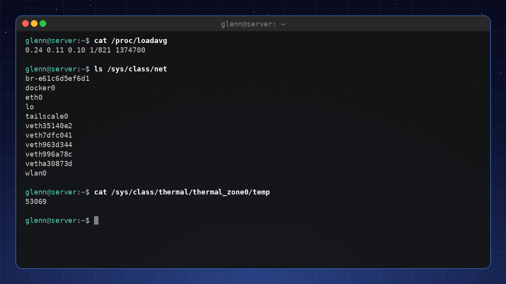
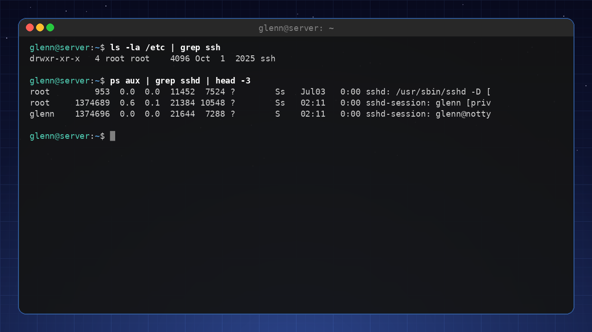
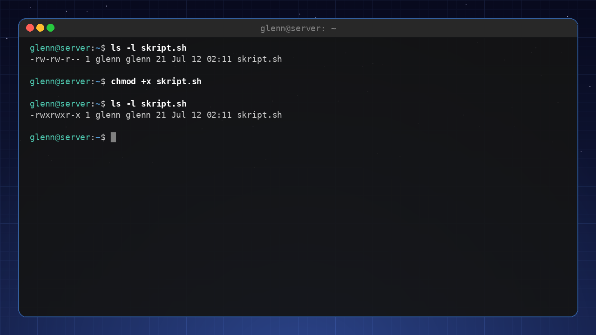
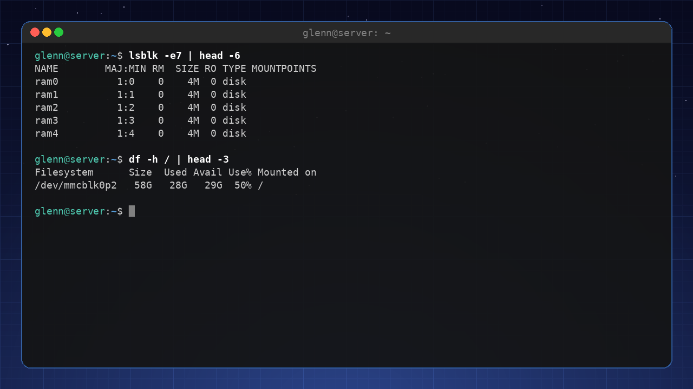
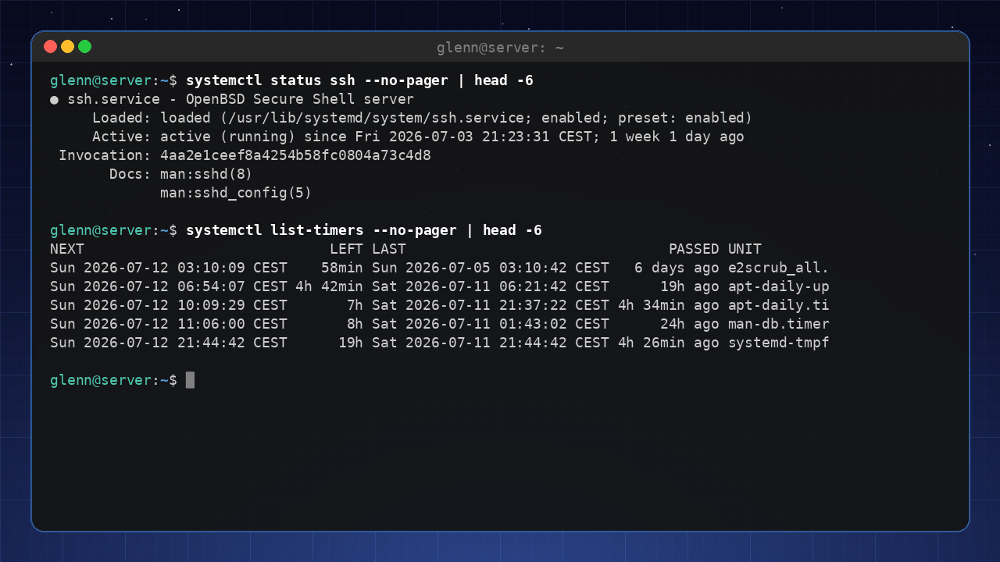
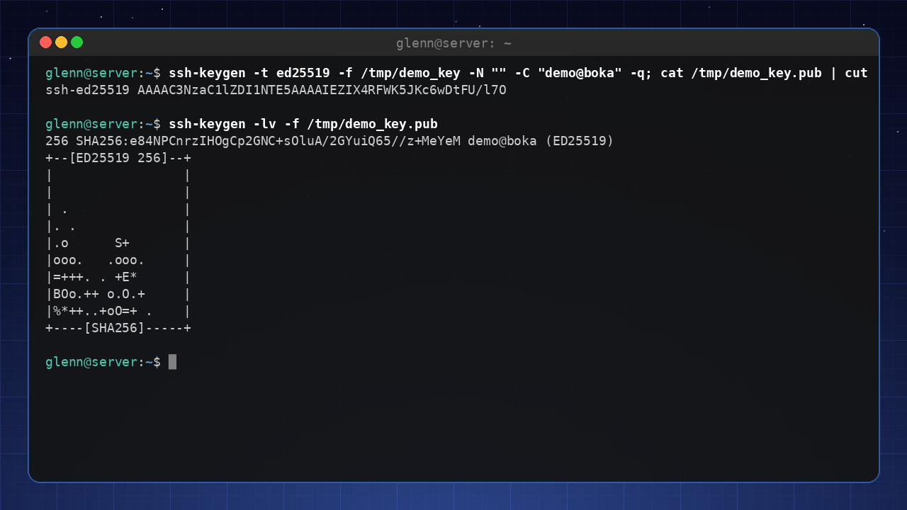
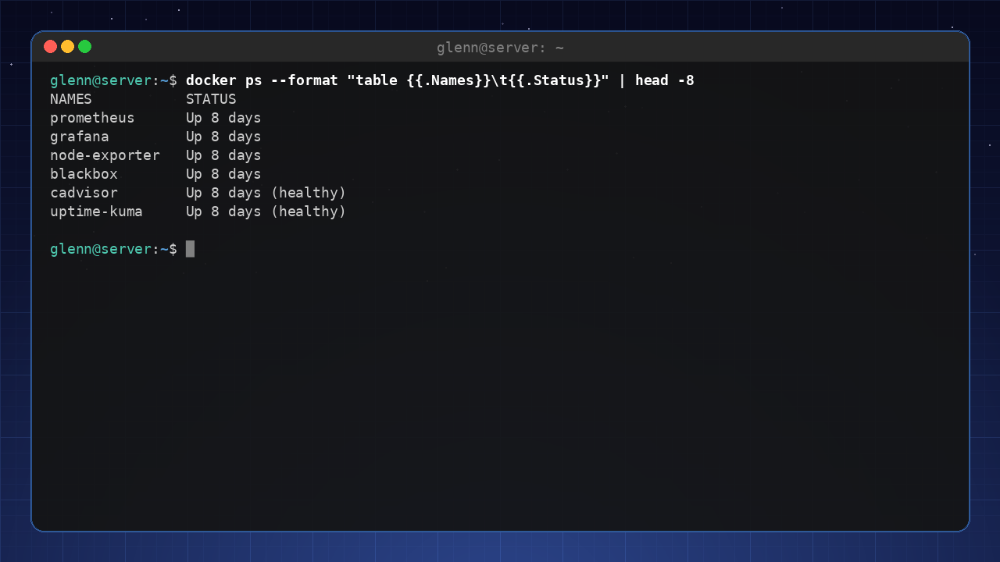
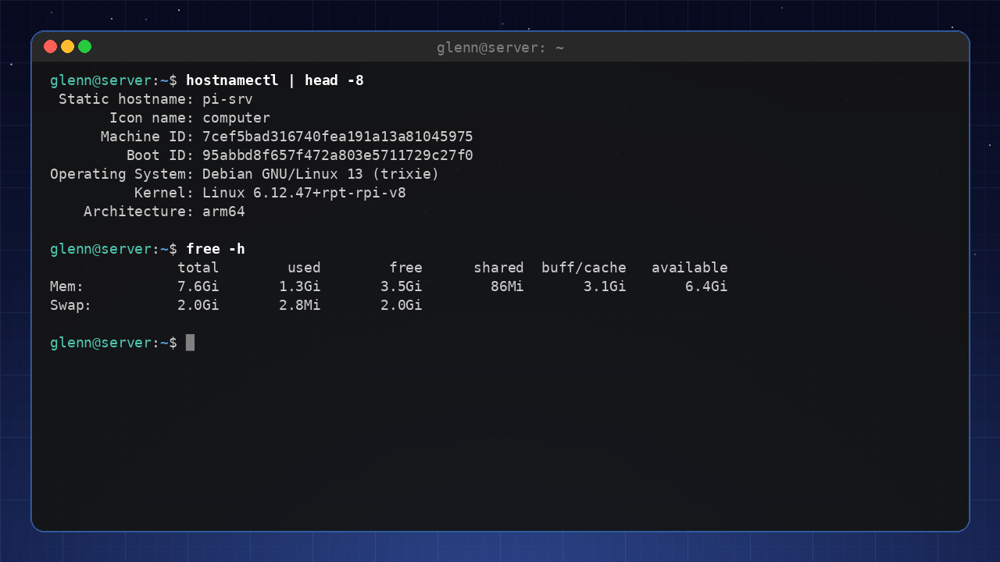
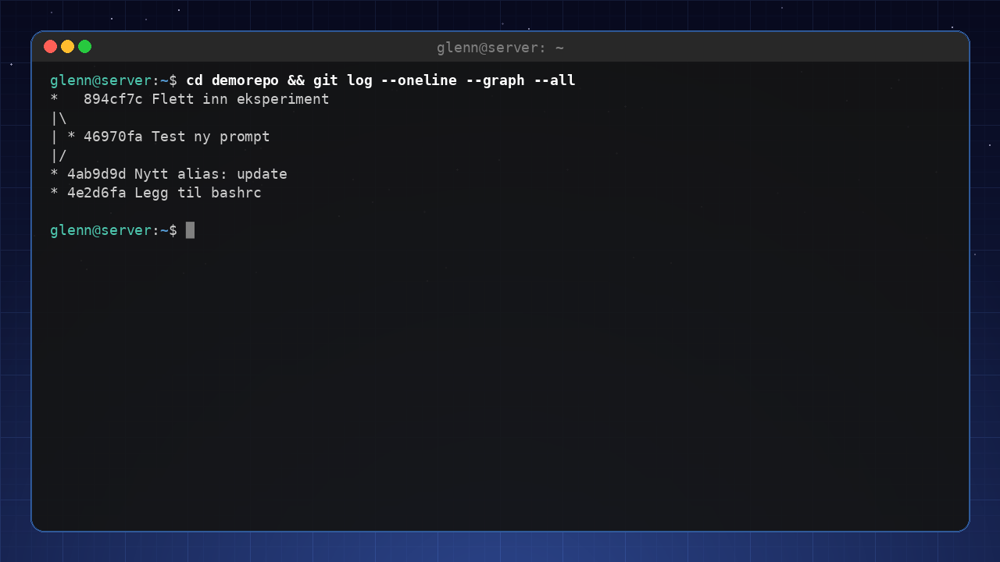

Linux for Viderekommende 2026
Oppfølgeren – for deg som har brukt Linux en stund og vil forstå og mestre systemet ditt.
Forord
Velkommen til Linux for Viderekommende 2026.
Denne boken er for deg som har tatt steget – du har installert Linux, brukt det til daglig, løst noen problemer, og nå kjenner du at du vil mer. Kanskje har du begynt å åpne terminalen av vane, eller du lurer på hva som egentlig skjer når du trykker på strømknappen. Kanskje har du sett andre gjøre kule ting med systemet sitt og tenkt: «Det vil jeg også lære.»
Du er ikke lenger en nybegynner, men du er heller ikke en ekspert. Du er en viderekommende – en som har lagt grunnmuren og er klar til å bygge videre.
Hvem er denne boken for?
Denne boken er for deg som:
- Har brukt Linux i noen måneder (eller mer) og er komfortabel med daglig bruk.
- Kan de grunnleggende terminalkommandoene (
ls,cd,sudo apt,flatpak). - Har installert programmer fra Programvaresenteret og kanskje prøvd noen kommandolinjer.
- Er nysgjerrig på hvordan systemet henger sammen under panseret.
- Vil lære å automatisere, tilpasse og virkelig eie maskinen din.
Du trenger ikke være programmerer, men du må være villig til å lese, prøve og feile – med tålmodighet.
Hvordan bruke denne boken
Boken er delt i fire hoveddeler, og de bygger på hverandre:
- Del 1: Forstå systemet ditt – Arkitektur, tekstverktøyene (grep, sed, awk), rettigheter, pakker, disker og fstab.
- Del 2: Mestre verktøyene – Dokumentasjon, konfigfiler, skripting, systemd, nettverk, SSH og tmux.
- Del 3: Bygg noe eget – Virtuelle maskiner, containere, selvhosting, backup og sikkerhet.
- Del 4: Videre ut i økosystemet – Andre distroer, skrivebord på dine premisser, feilsøking som metode, Git og bidrag til fellesskapet.
Les kapitlene i rekkefølge hvis du kan – de bygger på hverandre. Men du kan også hoppe til emner du brenner for, så lenge du har lest Del 1.
Hva du kan forvente
Etter denne boken vil du:
- Forstå hvordan Linux er bygget opp fra kjernen til skrivebordet.
- Kunne bruke terminalen som et effektivt verktøy, ikke bare en kopi-lim-maskin – inkludert grep, sed, awk og find.
- Skrive egne enkle skript for å automatisere hverdagen.
- Vite hvordan du slår opp i dokumentasjonen i stedet for å gjette.
- Administrere tjenester, nettverk og sikkerhet med selvtillit.
- Kunne sette opp din egen lille «sky» hjemme (Nextcloud, Jellyfin, Pi‑hole).
- Ha en metode for feilsøking som fungerer på nesten alle problemer.
- Bruke Git – verktøyet hele Linux-verden er bygget på.
- Få et overblikk over hele Linux-økosystemet og vite hvilken vei du vil gå videre.
Underveis dyrker boken også én vane som er verdt å merke seg allerede nå: mål, ikke gjett – du møter den første gang i kapittel 13, der vi måler hvor raske verktøyene faktisk er, og igjen i kapittel 20, der den blir ryggraden i feilsøkingen.
Et løfte
Jeg lover deg én ting: Du trenger ikke å kunne alt på en gang. Lær én ting, prøv det, feil, lær av feilen, og gå videre. Det er slik vi alle lærer.
Lykke til – og nyt reisen!
— Forfatteren
1. Slik henger Linux egentlig sammen
Del 1: Forstå systemet ditt
I dette kapittelet lærer du:
- Hva som skjer fra du trykker på strømknappen til du ser skrivebordet.
- Filsystemhierarkiet – hva de ulike mappene brukes til.
- Hva prosesser, minne og «alt er en fil» betyr i praksis.
Oppstartsprosessen – fra strøm til skrivebord
Når du trykker på strømknappen, starter en hel kjede av hendelser. La oss følge dem steg for steg.
- UEFI/BIOS – Den innebygde programvaren på hovedkortet våkner. Den sjekker maskinvare, og finner deretter oppstartsenheten (harddisken/SSDen) som er satt opp i BIOS.
- Bootloader (GRUB) – UEFI kjører bootloaderen,
vanligvis GRUB. GRUB viser en meny der du kan velge hvilket
operativsystem du vil starte (Linux, Windows, etc.). GRUB laster
deretter Linux-kjernen og en initiell ramdisk (
initramfs) inn i minnet. Initramfs løser et høna-og-egget-problem: kjernen trenger diskdriveren for å nå disken driveren ligger på – initramfs er mini-systemet i minnet som gir kjernen det den trenger for å komme i gang. - Kjernen (kernel) – Linux-kjernen startes. Den
initialiserer maskinvaren (CPU, minne, enheter), setter opp
minnehåndtering og starter den første prosessen:
systemd(ellerinitpå eldre systemer). - systemd – Den «førstefødte» prosessen (PID 1). Den starter alle andre tjenester i riktig rekkefølge: monterer filsystemer, setter opp nettverk – og starter til slutt display manageren (f.eks. GDM eller LightDM), som viser innloggingsskjermen.
- Innlogging – Du skriver inn brukernavn og passord. Først da starter selve skrivebordsmiljøet (Cinnamon, GNOME, COSMIC, …), og du ser skrivebordet.
Hele prosessen tar vanligvis 10–30 sekunder, avhengig av maskinvare og antall tjenester.
Filsystemhierarkiet – hva bor hvor?
Linux har et hierarkisk filsystem som starter i rotmappen
/. Her er en oversikt over de viktigste katalogene:
| Sti | Bruksområde |
|---|---|
/ |
Roten av filsystemet. Alt henger herfra. |
/bin |
Viktige systemkommandoer (f.eks. ls, cp).
Ofte en symbolsk lenke til /usr/bin. |
/boot |
Filer som trengs for oppstart: kjernen, initramfs, GRUB-konfigurasjon. |
/dev |
Enhetsfiler – alt av maskinvare (disker, USB, lydkort) vises som filer her. |
/etc |
Systemkonfigurasjonsfiler (f.eks. nettverk, brukere, tjenester). |
/home |
Brukernes personlige mapper. /home/brukernavn tilsvarer
C:\Users\brukernavn i Windows. |
/lib |
Biblioteker (dynamiske delte biblioteker, som .dll i
Windows). |
/media |
Monteringspunkt for flyttbare medier (USB-pinner, CD-ROM). |
/mnt |
Midlertidig montering av filsystemer. |
/opt |
Valgfrie tilleggsprogrammer (f.eks. manuelt installerte). |
/proc |
Virtuelt filsystem som viser prosessinformasjon og systemstatus. |
/root |
Hjemmemappe for root-brukeren (administrator). |
/run |
Kjøretidsdata, ofte midlertidige filer. |
/sbin |
Systemadministrasjonskommandoer (for root). |
/srv |
Data for tjenester (f.eks. webserver). |
/sys |
Virtuelt filsystem for maskinvareinformasjon og innstillinger. |
/tmp |
Midlertidige filer (slettes ved omstart). |
/usr |
Brukerprogrammer, biblioteker og dokumentasjon. Den største mappen. |
/var |
Variable data (logger, spool-filer, cache). |
Husk: I Linux er alt en fil – selv maskinvare, prosesser og kommunikasjonskanaler vises som filer. Dette gjør at du kan lese og skrive til dem med vanlige verktøy.
Prosesser og minne
En prosess er et program som kjører. Hver prosess har et unikt ID
(PID). Du kan se alle prosesser med ps aux
eller top/htop.
- Minne – Linux bruker virtuell hukommelse. Programmer får tildelt virtuelt adresserom, og kjernen oversetter dette til fysisk RAM. Når RAM er full, brukes swap (plass på disk) som en utvidelse.
- Zombie-prosesser – En prosess som er ferdig, men som foreldreprosessen ikke har hentet ut status fra. De er ufarlige, men kan hope seg opp ved dårlig programmering. En zombie bruker verken CPU eller minne – den er bare en rad i prosesstabellen, så det er ingen grunn til å jakte på dem.
- Daemoner – Bakgrunnsprosesser som starter ved
oppstart og kjører kontinuerlig (f.eks. nettverkstjenester, skrivere).
De ender ofte med en
d, f.eks.sshd,cron.
«Alt er en fil» – praktisk eksempel
Du kan lese CPU-informasjon fra en fil:
cat /proc/cpuinfoEller se hvor mye minne som er ledig:
cat /proc/meminfo/proc og /sys er fulle av slike vinduer inn
i systemet:
cat /proc/uptime # sekunder siden oppstart
cat /proc/loadavg # systembelastning
cat /sys/class/power_supply/BAT0/capacity # batteriprosent på bærbar
cat /sys/class/thermal/thermal_zone0/temp # CPU-temperatur (i tusendels grader)
ls /sys/class/net # alle nettverkskort
Verktøy som top, free og til og med
batteri-ikonet i panelet gjør egentlig ikke annet enn å lese disse
filene og presentere dem pent. Dette er en av grunnene til at Linux er
så transparent og lett å feilsøke.
Prøv selv:
- Kjør
df -hfor å se diskplass og monteringspunkter. - Kjør
ls -la /for å se alle rotkatalogene. - Kjør
cat /etc/os-releasefor å se hvilken distribusjon du kjører. - Kjør
htop(installer medsudo apt install htop) og utforsk prosessene.
Det viktigste fra dette kapittelet
- Oppstartsprosessen: UEFI → GRUB → Kjernen → systemd → skrivebord.
- Filsystemhierarkiet har en klar struktur; kjenn de viktigste katalogene.
- «Alt er en fil» – maskinvare, prosesser og konfigurasjon er tilgjengelig via filer.
- Prosesser har PID-er og kjøres i bakgrunnen som daemoner.
2. Terminalen for alvor
Del 1: Forstå systemet ditt
I dette kapittelet lærer du:
- Forskjellen på terminal, shell og kommandolinje.
- Pipes (
|), omdirigering og jokertegn. - Historikk, aliaser og å tilpasse
.bashrc. - Kort om alternative skall (zsh, fish).
Terminal vs. shell – hva er hva?
- Terminal – Det grafiske vinduet du åpner (f.eks. GNOME Terminal, Konsole). Det viser tekst og sender tastetrykk til shellen.
- Shell – Programmet som tolker kommandoene dine. Standard er Bash (Bourne Again SHell). Andre: zsh, fish.
- Kommandolinje – Selve teksten du skriver.
Når du åpner terminalen, starter Bash. Du kan se hvilket shell du
bruker med echo $SHELL.
Pipes og omdirigering – kraften i tekststrømmer
Linux-kommandoer leser fra standard inn (stdin) og skriver til standard ut (stdout) og standard feil (stderr). Du kan koble disse sammen.
Pipes (|) sender utdata fra én kommando
som inndata til neste:
ls -la | grep ".txt" # Viser bare filer som inneholder ".txt"
Omdirigering sender utdata til en fil i stedet for skjermen:
ls -la > fil.txt # Skriver ut til fil (overskriver)
ls -la >> fil.txt # Legger til på sluttenFeilmeldinger kan omdirigeres med
2>:
ls -la /ikke-eksisterende 2> feil.logEt svært vanlig triks er 2>/dev/null – «kast
feilmeldingene». /dev/null er et svart hull som sluker alt
du sender dit, og det er praktisk når en kommando spyr ut feilmeldinger
du ikke bryr deg om:
find / -name "*.conf" 2>/dev/nullKombinere stdout og stderr:
ls -la /ikke-eksisterende > ut.txt 2>&1Jokertegn (wildcards) – spar tastetrykk
*– erstatter null eller flere tegn:*.txtbetyr alle filer som slutter med.txt.?– erstatter ett tegn:bilde?.jpg(bilde1.jpg, bilde2.jpg, …).[...]– ett tegn fra en gruppe:bilde[0-9].jpg.
Eksempel: Kopier alle .conf-filer fra
/etc til en mappe:
cp /etc/*.conf ~/min_config/Historikk og snarveier
Ctrl + R– Søk i kommandohistorikk. Begynn å skrive, så finner den tidligere kommandoer.Ctrl + A– Gå til begynnelsen av linjen.Ctrl + E– Gå til slutten.Ctrl + U– Slett alt fra markør til begynnelsen.Ctrl + K– Slett alt fra markør til slutten.!!– Gjenta siste kommando.!$– Siste argument fra forrige kommando.
Aliaser – lag dine egne forkortelser
Lag permanente aliaser ved å legge dem i ~/.bashrc:
alias ll='ls -la'
alias update='sudo apt update && sudo apt upgrade'
alias ports='sudo ss -tulpn'Det siste aliaset er verdt en kommentar: ss -tulpn viser
hvem som lytter på hvilke porter – kapittel 11 forklarer den
ordentlig.
Last inn endringer med source ~/.bashrc.
Din egen
.bashrc – personlig tilpasning
.bashrc kjøres hver gang du starter et interaktivt
bash-session. Her kan du sette:
- Miljøvariabler (f.eks.
export EDITOR=nano). - Aliaser.
- Tilpasse prompten (PS1).
- Legge til egne funksjoner.
Eksempel på en nyttig funksjon:
mkcd() {
mkdir -p "$1" && cd "$1"
}Nå kan du skrive mkcd ny_mappe for å lage og gå inn i
mappen samtidig.
Alternative skall – zsh og fish
- zsh – Svært populært, med mange utvidelser og temaer (Oh My Zsh). Stort sett kompatibelt med Bash.
- fish – «Friendly interactive shell» – har autofullføring og syntaksfarging ut av boksen, men er ikke 100% kompatibelt med Bash.
For viderekommende anbefaler jeg å prøve zsh med Oh
My Zsh – det gir en mye bedre terminalopplevelse. Merk likevel: zsh er
for det interaktive skallet – skript skriver du fortsatt i bash
(kapittel 9). Og bytter du til zsh, hører .bashrc-triksene
dine hjemme i ~/.zshrc i stedet – ellers lurer du på
hvorfor endringene i .bashrc ikke virker.
Prøv selv:
- Kjør
history | grep "apt"for å se alle kommandoer medapt. - Lag et alias
upsom kjørersudo apt update && sudo apt upgrade -y. - Legg til
export PS1="\u@\h:\w$ "i.bashrcfor å endre prompten tilbruker@maskin:sti$. - Prøv
Ctrl + Rog skrivsudofor å finne tidligere sudo-kommandoer.
Det viktigste fra dette kapittelet
- Shell er kommandotolken; terminal er vinduet.
- Pipes (
|) og omdirigering (>,>>,2>) er uunnværlige. - Jokertegn (
*,?,[]) sparer tid. .bashrcer din personlige konfigurasjonsfil for shellen.- Prøv zsh med Oh My Zsh for en moderne opplevelse.
3. Tekstbehandling i terminalen
Del 1: Forstå systemet ditt
I dette kapittelet lærer du:
grepogfind– de to søkeverktøyene du kommer til å bruke hver uke.sedogawk– endre og trekke ut tekst uten å åpne en editor.cut,sort,uniqogwc– små verktøy som blir kraftige i kjeder.xargs– send søkeresultater videre som argumenter.
Nesten alt i Linux er tekst: logger, konfigfiler, kommandoutdata. Den som behersker tekstverktøyene, kan svare på spørsmål som «hvilke feil skjedde i natt?» eller «hvor i konfigurasjonen står dette?» på sekunder. Dette kapittelet er kanskje det mest brukte i hele boken – disse verktøyene dukker opp igjen i alle kapitlene som følger.
grep – finn tekst i filer
grep søker etter tekst (eller mønstre) i filer og
strømmer:
grep ERROR /var/log/syslog # linjer som inneholder ERROR
grep -i error /var/log/syslog # -i: ignorer store/små bokstaver
grep -r TODO ~/prosjekter # -r: søk rekursivt i en mappe
grep -n "Port" /etc/ssh/sshd_config # -n: vis linjenummer
grep -v "^#" /etc/fstab # -v: vis linjer som IKKE matcher (her: skjul kommentarer)
grep -c ERROR app.log # -c: tell antall treff
grep -A3 -B1 "panic" app.log # vis 3 linjer etter og 1 før hvert treffDet siste trikset – grep -v "^#" – er gull for å lese
konfigfiler: du ser bare de aktive linjene.
Kombinert med pipes (fra kapittel 2) blir grep et filter:
ps aux | grep firefox # kjører Firefox?
history | grep ssh # hva var det jeg skrev sist?
dpkg -l | grep -i nvidia # hvilke NVIDIA-pakker er installert?find – finn filer
Der grep leter i filer, leter find
etter filer:
find . -name "*.jpg" # alle .jpg herfra og nedover
find . -iname "*.JPG" # -iname: uavhengig av store/små bokstaver
find ~ -type d -name "node_modules" # bare mapper (-type d) med dette navnet
find . -mtime +30 # filer endret for mer enn 30 dager siden
find . -size +100M # filer større enn 100 MB
find /etc -name "*.conf" 2>/dev/null # kast «Permission denied»-støyfind kan også gjøre noe med det den finner:
find . -name "*.tmp" -delete # slett (test med -print først!)
find . -name "*.sh" -exec chmod +x {} \; # kjør en kommando per filVane som lønner seg: Kjør alltid
find-kommandoen uten-delete/-execførst, se at listen stemmer, og legg på handlingen etterpå.
xargs – fra liste til argumenter
xargs tar linjer fra stdin og gjør dem om til argumenter
for en annen kommando:
find . -name "*.log" | xargs wc -l # tell linjer i alle loggfiler
find . -name "*.bak" | xargs -r rm # slett alle .bak (-r: gjør ingenting hvis tomt)
cat servere.txt | xargs -I{} ssh {} uptime # kjør uptime på alle servere i listenHar filnavnene mellomrom, bruk nullseparert modus – dette er standardtrikset:
find . -name "*.jpg" -print0 | xargs -0 ls -lhsed – søk og erstatt i strømmer
sed (stream editor) endrer tekst på vei gjennom en pipe
– eller direkte i filer:
sed 's/gammel/ny/' fil.txt # erstatt første treff per linje (viser resultatet)
sed 's/gammel/ny/g' fil.txt # /g: alle treff per linje
sed -i 's/8080/9090/g' config.yml # -i: endre filen på stedet (ta backup først!)
sed -n '10,20p' fil.txt # vis bare linje 10–20
sed '/^$/d' fil.txt # slett tomme linjersed -i er verktøyet når du skal endre samme innstilling
i mange filer:
grep -rl "gammelt-servernavn" /etc/app/ | xargs sed -i 's/gammelt-servernavn/nytt-servernavn/g'Den kommandolinjen – grep finner filene, xargs mater sed – er et mønster du vil gjenbruke resten av livet.
awk – kolonneverktøyet
awk er et helt programmeringsspråk, men 90 % av bruken
er én ting: plukke kolonner.
df -h | awk '{print $5, $6}' # kolonne 5 og 6 (bruk% og monteringspunkt)
ps aux | awk '$3 > 50' # prosesser som bruker mer enn 50 % CPU
awk -F: '{print $1}' /etc/passwd # -F: sett skilletegn (her kolon) – alle brukernavn
ls -l | awk '{sum += $5} END {print sum}' # summer filstørrelserTenk på det slik: grep velger linjer,
awk velger kolonner.
cut, sort, uniq og wc – småverktøyene
cut -d: -f1 /etc/passwd # samme som awk-eksempelet – kolonne 1, kolon-separert
sort navn.txt # sorter alfabetisk
sort -h storrelser.txt # -h: sorter «menneskelige» tall (1K, 2M, 3G)
sort -rn tall.txt # -r: synkende, -n: numerisk
uniq -c # tell like nabolinjer (krever sortert inndata!)
wc -l fil.txt # tell linjerKlassikeren – hvilke IP-adresser prøver seg oftest på SSH-serveren din?
grep "Failed password" /var/log/auth.log | awk '{print $(NF-3)}' | sort | uniq -c | sort -rn | headLes den fra venstre: finn linjene → plukk IP-kolonnen → sorter → tell
duplikater → sorter etter antall → vis toppen. Fem små verktøy, ett
kraftig svar. Dette er terminalens superkraft. Får du ingen
treff i auth.log ennå, er det faktisk et godt tegn – kom
tilbake til eksempelet etter kapittel 12 (SSH), da har loggen fått
innhold.

🟡 Valgfritt: Moderne alternativer som
ripgrep(raskere grep) ogfd(enklere find) får du i kapittel 13. Lær de klassiske først – de finnes på alle systemer.
Prøv selv:
- Finn alle linjer i
/etc/ssh/sshd_configsom ikke er kommentarer eller tomme:grep -v "^#" /etc/ssh/sshd_config | grep -v "^$". - Finn de 5 største filene i hjemmemappen din:
find ~ -type f -size +50M 2>/dev/null | head -5. - Bruk
df -h | awk '{print $5, $6}'og finn partisjonen med minst plass. - Tell hvor mange unike kommandoer du har i historikken:
history | awk '{print $2}' | sort | uniq -c | sort -rn | head.
Det viktigste fra dette kapittelet
grepvelger linjer,awkvelger kolonner,sedendrer tekst.findfinner filer – test alltid uten-deleteførst.xargslimer verktøyene sammen når resultatet skal bli argumenter.- Kjedene (
grep | awk | sort | uniq -c | sort -rn) er kraftigere enn noe enkeltverktøy.
4. Brukere, grupper og filrettigheter
Del 1: Forstå systemet ditt
I dette kapittelet lærer du:
- Hvordan Linux håndterer brukere og grupper – og hvorfor gruppene er nøkkelen til det meste.
- Legge en bruker til en gruppe med
usermod -aGuten å sage av greinen du sitter på. - Forstå
chmod,chown,statog rettighetstall (755, 644). - Hvorfor
sudofungerer som det gjør. - Vanlige «Permission denied»-feil – og hvorfor
chmod 777aldri er svaret.
Hver eneste «Permission denied» du noen gang kommer til å se, koker ned til én setning: en bruker prøvde noe rettighetene ikke tillater. Skjønner du modellen bak – hvem er brukeren, hvilke grupper er den i, hva sier rettighetene på filen – slutter feilmeldingene å være mystiske og blir i stedet et regnestykke du kan løse på ti sekunder. Dette kapittelet gir deg regnestykket.
Brukere og grupper – hvem er hvem?
Linux er et flerbrukersystem, og det gjelder også maskinen der du er alene: webserveren din kjører som én bruker, databasen som en annen, og du som en tredje. Poenget er skadebegrensning – blir webserveren kompromittert, kan angriperen bare det webserver-brukeren kan. Hver bruker har et unikt UID (User ID) og tilhører én primærgruppe og eventuelt flere sekundære grupper.
- Systembrukere – Opprettes av systemet for å kjøre
tjenester (f.eks.
www-data,mysql). De har ofte UID < 1000 og kan som regel ikke logge inn. - Vanlige brukere – UID starter fra 1000 og oppover.
- root – Superbrukeren, UID 0. Har ubegrensede rettigheter – rettighetssjekker gjelder rett og slett ikke for UID 0.
Se brukerinformasjon med id og whoami. List
alle brukere: cat /etc/passwd. Selve passordene ligger ikke
der – de lagres kryptert i /etc/shadow, som bare root kan
lese. (Det er forresten et fint eksempel på filrettigheter i praksis:
kjør ls -l /etc/shadow og se selv.)
Hvorfor grupper? Fordi rettigheter på en fil bare
har plass til én eier – men ofte skal flere ha tilgang. Gruppen
er mellomtinget: filen eies av én bruker, men alle i riktig gruppe
slipper til. Det er slik Linux svarer på «gi Kari og Ola, men ingen
andre, tilgang til denne mappen» – og slik systemet gir deg tilgang til
skriveren (lp), virtuelle maskiner (libvirt)
eller Docker (docker) uten å gjøre deg til root.
Gruppemedlemskap i
praksis – usermod -aG
Dette er operasjonen du kommer til å gjøre igjen og igjen: en tjeneste sier «you must be in group X», og du skal legge deg selv til. Kommandoen er:
sudo usermod -aG gruppe brukernavn # legg brukeren TIL i gruppen
groups brukernavn # sjekk hvilke grupper brukeren er i-a (append) er ikke valgfri pynt.
usermod -G alene erstatter hele listen over
sekundære grupper med det du oppgir. Skriver du
sudo usermod -G docker glenn, er du nå medlem av
docker – og bare docker. Var du i
sudo-gruppen, er du det ikke lenger, og da har du nettopp
mistet muligheten til å rette feilen med sudo. Med -aG
legges gruppen til uten å røre resten. Gjør -aG til
muskelminne.
Fellen alle går i minst én gang: gruppeendringen
gjelder først ved neste innlogging. Gruppelisten din leses når
økten starter – terminaler du allerede har åpne, kjenner ikke den nye
gruppen, og kommandoen som nektet, nekter fortsatt. Det ser ut som om
usermod ikke virket. Det virket – du ser det bare ikke
ennå.
groups # gruppene ØKTEN din har (kan være utdatert)
groups glenn # gruppene brukeren har ifølge systemet (fasit)
newgrp docker # starter et nytt skall der gruppen gjelder – kun i det skalletEr de to groups-variantene uenige, er det logg ut / logg
inn som mangler. newgrp er nødplasteret for én økt; full
utlogging (eller omstart) er det som faktisk rydder opp. Dette dukker
opp igjen i kapittel 14, der libvirt-gruppen er billetten
til å kjøre virtuelle maskiner uten sudo – og halvparten av «det virker
ikke»-tilfellene der er nettopp en glemt ny innlogging.
Filrettigheter – lese, skrive, utføre
Hver fil og mappe har tre sett med rettigheter, og systemet sjekker dem i denne rekkefølgen:
- Eier – Brukeren som eier filen. Er du eieren, er det eier-settet som gjelder – ferdig.
- Gruppe – Ellers: er du i filens gruppe, gjelder gruppe-settet.
- Andre – Ellers: alle andre får dette settet.
Hvert sett har tre tillatelser: r (read), w (write), x (execute).
For en fil betyr r at du kan lese innholdet,
w at du kan endre det, x at du kan kjøre den
(hvis det er et program/script).
For en mappe betyr bokstavene noe litt annet – og det er verdt å
stoppe ved: r lar deg liste innholdet,
x lar deg gå inn i mappen (cd) og nå
filene i den, og w lar deg opprette og slette filer der.
Legg merke til det siste: retten til å slette en fil ligger i
mappen, ikke i filen. En fil du ikke kan skrive til, kan
likevel slettes av alle som har w på mappen den ligger
i.
Rettighetstall (oktaler) – 755, 644 forklart
Hver tillatelse har en numerisk verdi: r=4,
w=2, x=1. Summen gir et tall fra 0–7 – og
fordi verdiene er 4, 2 og 1, gir hver sum nøyaktig én mulig kombinasjon.
Det er derfor tallene fungerer som stenografi.
7=rwx(4+2+1)6=rw-(4+2)5=r-x(4+1)4=r--(4)0=---
Rettighetene angis med tre tall: eier, gruppe, andre.
755– Eier: les+skriv+utfør (7), gruppe: les+utfør (5), andre: les+utfør (5). Vanlig for kjørbare filer og mapper: alle kan bruke dem, bare eieren kan endre dem.644– Eier: les+skriv (6), gruppe: les (4), andre: les (4). Vanlig for tekstfiler: alle kan lese, bare eieren kan skrive.600– Kun eier les+skriv. Standarden for private ting – SSH-nøkler, passordfiler. SSH nekter faktisk å bruke en nøkkel med slappere rettigheter enn dette.
Se rettigheter –
ls -l og stat
ls -l viser rettighetene som tekst
(-rw-r--r--). Når du heller vil ha tallet – for eksempel
for å sammenligne med det en installasjonsveiledning krever – er
stat presisjonsverktøyet:
stat fil.txt # alt: rettigheter, eier, tidsstempler, størrelse
stat -c '%a %A %U:%G' fil.txt # kompakt: f.eks. «644 -rw-r--r-- glenn:glenn»%a gir det oktale tallet, %A teksten,
%U:%G eier og gruppe. Én linje, hele regnestykket – dette
er kommandoen å kjøre før du endrer noe, så du vet hva du
endrer fra.
Endre rettigheter –
chmod og chown
chmod – Endre tillatelser. Numerisk når
du vil sette alt på én gang, symbolsk når du vil justere én ting uten å
røre resten:
chmod 755 fil.sh # Numerisk: sett hele rettighetssettet
chmod u+x fil.sh # Legg til utfør for eier – resten urørt
chmod go-w fil.txt # Fjern skrive for gruppe og andre
chown – Endre eier og gruppe. Krever
root, av åpenbar grunn: kunne hvem som helst gi bort filer, kunne hvem
som helst også ta dem.
sudo chown bruker:gruppe fil.txt
sudo chown -R bruker:gruppe /mappe # RekursivtHvorfor
chmod 777 aldri er svaret
Et sted på internett kommer noen til å foreslå
chmod -R 777 som løsning på rettighetsproblemet ditt. Og
det «virker» – på samme måte som det «løser» en låst dør å fjerne låsen
fra hele huset. 777 betyr at alle brukere på
systemet kan lese, endre og kjøre alt i mappen: webserver-brukeren, en
kompromittert tjeneste, et script som løper løpsk. Du har ikke løst
problemet; du har fjernet sikkerheten som var problemets symptom.
Det riktige svaret er alltid en variant av samme oppskrift:
- Finn ut hvem som nekter. Hvilken bruker kjører
prosessen som feiler? (
ps aux | grep tjeneste, eller les feilmeldingen.) - Finn ut hva den trenger. Lese? Skrive? Gå inn i
mappen? Sjekk dagens tilstand med
stat -c '%a %A %U:%G'. - Gi akkurat den tilgangen – som regel ved å sette
riktig gruppe på filene (
chown :gruppe) og gi gruppenrwellerrX, eller ved å legge brukeren i riktig gruppe medusermod -aG.
Det tar to minutter mer enn 777 – og det er to minutter
som skiller en administrator fra en som kopierer kommandoer.
Hvorfor sudo?
– privilegier på kommando
sudo lar deg kjøre en kommando som en annen bruker (som
regel root). Hvorfor ikke bare logge inn som root? Fordi
sudo gir deg root per kommando i stedet for
per økt: hvert privilegerte steg er et bevisst valg, alt
logges, og en glemt root-terminal ligger ikke åpen resten av dagen. Det
krever at du er i gruppen sudo (eller wheel på
noen systemer) – nok et eksempel på at gruppemedlemskap er nøkkelen. Når
du kjører sudo, blir du spurt om ditt eget passord, og
systemet sjekker /etc/sudoers for å se hva du har lov
til.
Du kan redigere sudoers-filen med sudo visudo – aldri
direkte med en editor. visudo sjekker syntaksen før den
lagrer; en skrivefeil lagret rett i filen kan låse deg ute fra sudo på
hele systemet.
sudo kan også kjøre kommandoer som andre brukere enn
root, med -u:
sudo -u www-data ls /var/www # se mappen slik webserveren ser denDet er gull for feilsøking: i stedet for å gjette om webserveren har tilgang, tester du det.
Vanlige «Permission denied»-feil
- Du prøver å skrive til en mappe du ikke har
skriverettigheter i.
Diagnose:stat -c '%a %A %U:%G' mappen– eier noen andre den, og gruppen manglerw? Løsning: gi riktig bruker/gruppe tilgang medchown/chmod– eller bruksudohvis det faktisk er en administratoroppgave. - Du prøver å kjøre en fil uten
x-rettighet.
Klassisk etter nedlasting av et script –x-biten følger ikke med. Løsning:chmod +x fil. - Du prøver å lese en fil som tilhører en annen
bruker.
Løsning:sudofor engangstilfellet; er det noe du trenger jevnlig, er riktig svar en gruppe som begge er med i. - Du ER lagt til i riktig gruppe – men det virker fortsatt
ikke.
Sammenligngroups(økten) medgroups brukernavn(systemet). Er de uenige, mangler bare ny innlogging – se gruppeseksjonen over.
Prøv selv:
- Lag en fil:
touch /tmp/test.txt, og se på den med bådels -l /tmp/test.txtogstat -c '%a %A %U:%G' /tmp/test.txt. (Vi bruker/tmpfordi hjemmemappen din kan være lukket for andre brukere – da hadde neste trinn stoppet allerede i mappen.) - Lås den:
chmod 600 /tmp/test.txt– kjørstatigjen og se at tallet stemmer med teksten. - Bevis at rettighetene faktisk håndheves:
sudo -u nobody cat /tmp/test.txt. Du kjører nåcatsom systembrukerennobody– og får «Permission denied», enda du selv eier filen og brukte sudo.600betyr kun eier, ognobodyer ikke eieren. Det er hele modellen i én kommando. - Åpne den for lesing igjen:
chmod 644 /tmp/test.txt, og se at sammesudo -u nobody cat /tmp/test.txtnå lykkes. - Sjekk dine egne grupper:
groups, og sammenlign medid. Kjenner du igjensudo-gruppen?
Det viktigste fra dette kapittelet
- Brukere og grupper styrer tilgang – og gruppene er verktøyet for «flere skal ha tilgang, men ikke alle».
usermod -aG gruppe bruker– alltid med-a, ellers erstattes gruppelisten. Endringen gjelder først etter ny innlogging (newgrpfor én økt,groupsviser fasit mot økt).- Rettigheter: r=4, w=2, x=1. Tre tall: eier, gruppe, andre.
stat -c '%a %A %U:%G'viser hele bildet på én linje. chmodogchowner nøkkelverktøyene – ogchmod 777er å fjerne låsen, ikke å løse problemet: finn hvem som trenger tilgang, og gi akkurat den.sudogir root per kommando, ikke per økt – ogsudo -u brukerlar deg teste tilgang i stedet for å gjette.- Feilmeldinger skyldes nesten alltid rettigheter – eller en gruppeendring som venter på ny innlogging.
5. Pakkesystemet i dybden
Del 1: Forstå systemet ditt
I dette kapittelet lærer du:
- Hva APT faktisk gjør – pakkebrønner, avhengigheter og versjoner.
- Forskjellen på
aptogapt-get. - PPA-er – hva de er og hvorfor du bør være forsiktig.
- Flatpak-tillatelser med Flatseal.
- AppImage og Snap – fordeler og ulemper.
- pipx – Python-verktøy uten å rote til systemets Python.
- Hvordan nedgradere en pakke og holde systemet rent.
Å installere programvare på Linux er noe helt annet enn å laste ned en installasjonsfil fra en nettside. Pakkesystemet vet hvilke filer som hører til hvilken pakke, hva som avhenger av hva, og hvor alt kommer fra – det er derfor du kan oppdatere hele systemet med én kommando. Men de siste årene har det dukket opp flere formater ved siden av det klassiske: Flatpak, Snap, AppImage og Python-verdenens pipx. Dette kapittelet gir deg oversikten, slik at du vet hvilket verktøy du skal strekke deg etter når.
APT – Advanced Package Tool
APT er pakkebehandleren som brukes i Debian-baserte distribusjoner (Ubuntu, Linux Mint, Pop!_OS). Den henter pakker fra pakkebrønner (repositories) – offisielle lagre med forhåndsbyggede programvarepakker.
Grunnleggende APT-kommandoer:
| Kommando | Betydning |
|---|---|
sudo apt update |
Oppdaterer pakkelisten fra brønner. |
sudo apt upgrade |
Oppgraderer alle installerte pakker til nyeste versjon. |
sudo apt full-upgrade |
Som upgrade, men fjerner om nødvendig. |
sudo apt install <pakke> |
Installerer en pakke. |
sudo apt remove <pakke> |
Fjerner en pakke (beholder konfigurasjon). |
sudo apt purge <pakke> |
Fjerner pakke og konfigurasjon. |
sudo apt autoremove |
Fjerner unødvendige avhengigheter. |
apt search <søk> |
Søker i pakkebrønnen. |
apt show <pakke> |
Viser detaljer om en pakke. |
Legg merke til todelingen: update henter bare
listen over hva som finnes – den installerer ingenting. Det er
upgrade som faktisk oppgraderer. Derfor kjøres de alltid
som et par, og derfor er
sudo apt update && sudo apt upgrade sannsynligvis
den kommandolinjen du kommer til å skrive oftest.
apt vs. apt-get –
apt er en nyere, mer brukervennlig frontend til
apt-get og apt-cache. For daglig bruk holder
apt. apt-get er fortsatt nyttig i skript fordi
det er mer stabilt og har færre endringer.
PPA-er – Personal Package Archives
PPA-er er tredjepartslagre som utvider programvareutvalget. De kan gi deg nyere versjoner av programmer eller programvare som ikke er i de offisielle brønnene.
Slik legger du til en PPA:
sudo add-apt-repository ppa:navn/ppa
sudo apt update
sudo apt install pakkeKilder du legger til i dag, havner som filer i
/etc/apt/sources.list.d/ med endelsen .sources
– et lesbart nøkkel-verdi-format (deb822) som er det nye formatet du vil
se, i stedet for de gamle énlinjes .list-filene.
Forsiktighetsregler:
- PPA-er er laget av andre brukere – de kan inneholde ustabile eller usikre pakker.
- Hvis du legger til mange PPA-er, kan det oppstå konflikter.
- Fjern en PPA med
sudo add-apt-repository --remove ppa:navn/ppa.
Flatpak – tillatelser og Flatseal
Flatpak er et moderne pakkeformat som kjører apper i sandkasse. Hver app har egne tillatelser (tilgang til filsystem, nettverk, lyd, etc.). Noen ganger har apper for mange tillatelser – du kan kontrollere dem med Flatseal.
Installer Flatseal:
flatpak install flathub com.github.tchx84.FlatsealÅpne Flatseal og se hvilke tillatelser hver app har. Du kan f.eks. fjerne tilgang til hele hjemmemappen og bare gi tilgang til spesifikke mapper.
AppImage og Snap
- AppImage – Én kjørbar fil. Ingen installasjon,
ingen avhengigheter. Bare last ned,
chmod +x, og kjør. Perfekt for å prøve programvare uten at det setter spor i systemet. Ulempe: ingen automatiske oppdateringer. - Snap – Canonical (Ubuntu) sitt pakkeformat, ligner
Flatpak, men med én sentralisert butikk. Selve klienten
(
snapd) er åpen kildekode – det er butikk-serveren som er lukket, og det er den biten kritikken retter seg mot: bare Canonical kan drive en Snap-butikk. Mange misliker også at enkelte apper starter tregere. På Ubuntu er Snap standard for mange apper. Du kan unngå Snap ved å installere Flatpak-versjoner i stedet.
Python-verktøy utenfor apt – pipx
Mange nyttige kommandolinjeverktøy er skrevet i Python –
yt-dlp, httpie, glances og
hundrevis av andre. Ligger de ikke i pakkebrønnen (eller ligger der i en
gammel versjon), er det fristende å hente dem rett fra Python-verdenen
med pip install. Men på moderne distribusjoner er nettopp
det blokkert, og med god grunn: systemets Python eies av apt. Lot pip
skrive rett inn i den, kunne den overskrive filer som distroens egne
verktøy er avhengige av – og plutselig virker ikke pakkebehandleren din
lenger.
Derfor møter du denne feilmeldingen når du prøver:
$ pip install yt-dlp
error: externally-managed-environment
× This environment is externally managed
╰─> To install Python packages system-wide, try apt install
python3-xyz, where xyz is the package you are trying to
install.
...Dette er ikke noe som er ødelagt – det er en sikring (definert i PEP 668) som sier at Python-miljøet styres utenfra, av apt. Svaret er heller ikke å tvinge seg forbi den, men å bruke pipx: det installerer hvert verktøy i sitt eget isolerte virtuelle miljø og legger selve kommandoen i PATH. Verktøyene får det de trenger, systemets Python forblir urørt, og alle er fornøyde.
sudo apt install pipx
pipx ensurepath # sørger for at ~/.local/bin er i PATH (kjøres én gang)
pipx install yt-dlp # eget isolert miljø – kommandoen virker overalt
pipx list # hva har jeg installert med pipx?
pipx upgrade-all # oppgrader alle pipx-verktøyeneNedgradering av pakker
Hvis en oppdatering har skapt problemer, kan du nedgradere til en eldre versjon.
For APT-pakker:
sudo apt install pakke=versjon # Installer spesifikk versjon
sudo apt-mark hold pakke # Lås versjonen, slik at den ikke oppgraderes
sudo apt-mark unhold pakke # Fjern låsMen hvilke versjoner finnes egentlig? Det svarer
apt policy på:
apt policy pakkeUtskriften viser tre ting: Installert (versjonen du
har nå), Kandidat (versjonen apt install
ville valgt), og en versjonstabell som viser hvilken pakkebrønn hver
versjon kommer fra. Er installert og kandidat like, er du à jour – og
står det flere linjer i tabellen, har du noe å nedgradere til. Vil du
heller ha alle versjonene som en enkel liste:
apt list -a pakkeHold systemet rent
APT rydder ikke opp etter seg av seg selv: avhengigheter blir
liggende igjen når pakken som trengte dem er borte, og hver nedlastede
.deb-fil lagres i en buffer på disken. Tre kommandoer
holder det i sjakk:
sudo apt autoremove– fjern avhengigheter ingen pakker trenger lenger.sudo apt autoclean– fjern nedlastede pakkefiler som ikke lenger finnes i brønnen.sudo apt clean– tøm hele pakkebufferen (frigjør mest plass).
Prøv selv:
- Finn ut hvilken versjon av en pakke du har:
apt show <pakke>. - Legg til en PPA (f.eks. for en nyere versjon av et program du bruker) og installer derfra.
- Installer Flatseal og sjekk tillatelsene til en Flatpak-app.
- Kjør
apt policypå noen pakker du bruker, og finn én der versjonstabellen viser mer enn én versjon. Nedgrader den medsudo apt install pakke=versjon, og oppgrader tilbake medsudo apt upgrade. (Mange pakker har bare én versjon i brønnen – da er det ingenting å nedgradere til, og det er helt normalt.) - Prøv
pip install yt-dlpog se PEP 668-feilmeldingen med egne øyne – installer deretter verktøyet riktig medpipx install yt-dlp.
Det viktigste fra dette kapittelet
- APT er den sentrale pakkebehandleren i Debian-systemer.
- PPA-er gir tilgang til flere programmer, men bruk dem med omhu.
- Flatpak gir sandkassede apper; Flatseal lar deg kontrollere tillatelser.
- AppImage er praktisk for enkeltprogrammer; Snap er et alternativ – klienten er åpen, butikk-serveren lukket.
pip installrett i systemet er blokkert (PEP 668) – brukpipxfor Python-verktøy.apt policyviser installert versjon, kandidat og kilder; du kan nedgradere og låse versjoner ved behov.
6. Disker, filsystemer og fstab
Del 1: Forstå systemet ditt
I dette kapittelet lærer du:
lsblk,blkidogdf– se hva som finnes av disker og hvor de er montert.mountogumount– koble filsystemer til og fra manuelt./etc/fstab– en av de viktigste filene i Linux, og hvordan du redigerer den trygt.duogncdu– finn ut hva som spiser diskplassen.
I Windows heter diskene C: og D:. I Linux blir alt i stedet
montert inn i det samme filtreet – en USB-pinne dukker opp som
en mappe under /media, en ekstra disk kan bli
/data. Dette kapittelet gir deg kontrollen over hvordan det
skjer.
Se hva du har: lsblk, blkid og df
lsblk viser blokk-enheter (disker og
partisjoner) som et tre:
lsblkNAME MAJ:MIN RM SIZE RO TYPE MOUNTPOINTS
nvme0n1 259:0 0 476,9G 0 disk
├─nvme0n1p1 259:1 0 512M 0 part /boot/efi
└─nvme0n1p2 259:2 0 476,4G 0 part /
sda 8:0 1 57,7G 0 disk
└─sda1 8:1 1 57,7G 0 part /media/bruker/USBPINNENavnelogikken: nvme0n1 er første NVMe-SSD,
sda/sdb er SATA-disker og USB-enheter, og
p1/1 bak er partisjonsnummeret.

blkid viser UUID (den unike ID-en) og
filsystemtype for hver partisjon – du trenger den til fstab om et
øyeblikk:
sudo blkiddf -h viser hvor mye plass som er brukt
per montert filsystem (-h = lesbare størrelser):
df -hmount og umount – manuell montering
Skrivebordsmiljøet monterer USB-pinner automatisk, men på servere – og når automatikken svikter – gjør du det selv:
sudo mkdir -p /mnt/usb # lag et monteringspunkt (en helt vanlig mappe)
sudo mount /dev/sda1 /mnt/usb # monter partisjonen dit
ls /mnt/usb # innholdet er nå tilgjengelig
sudo umount /mnt/usb # koble fra (merk: umount, ikke unmount)Viktig om umount: Får du «target is
busy», har et program filer åpne der – ofte er det bare en terminal som
står i mappen. lsof +f -- /mnt/usb viser hvem synderen
er.
Ta det med deg: En montert disk er bare en mappe med innhold fra et annet filsystem. Det er hele magien.
/etc/fstab – disker som monteres automatisk
/etc/fstab (filesystem table) bestemmer hva som monteres
ved oppstart. Slik ser en typisk linje ut:
UUID=a1b2c3d4-... /data ext4 defaults 0 2De seks feltene betyr:
| Felt | Eksempel | Betydning |
|---|---|---|
| 1 | UUID=a1b2… |
Hvilken partisjon (bruk UUID fra blkid, ikke
/dev/sdb1 – enhetsnavn kan bytte plass mellom
oppstarter!) |
| 2 | /data |
Hvor den skal monteres |
| 3 | ext4 |
Filsystemtype (ext4, ntfs,
vfat, …) |
| 4 | defaults |
Alternativer – defaults er riktig for de fleste |
| 5 | 0 |
Brukes av dump (gammelt backupverktøy) – alltid 0 |
| 6 | 2 |
Filsystemsjekk ved oppstart: 1 for rotfilsystemet, 2 for andre, 0 for hopp over |
Eksempel: legg til en ekstra datadisk permanent
sudo blkid # finn UUID-en til partisjonen
sudo mkdir -p /data
sudo nano /etc/fstab # legg til linjen over med din UUID
sudo mount -a # monter alt i fstab NÅ – tester samtidig linjen din⚠️ Den viktigste regelen for fstab: Kjør alltid
sudo mount -aetterpå og se etter feilmeldinger, og aller helstsudo findmnt --verifyogså. En ødelagt fstab-linje kan gjøre at maskinen ikke starter normalt. Skriver du feil og maskinen henger ved oppstart: velg «recovery mode» i GRUB, eller start fra live-USB, og fjern linjen.
Nyttig alternativ: legger du til nofail
i felt 4 (f.eks. defaults,nofail), starter maskinen fint
selv om disken mangler – lurt for eksterne disker som ikke alltid er
tilkoblet.
Godt å vite: På moderne systemer leser systemd fstab
og genererer egne «mount-units» av linjene. Har du nettopp endret fstab,
kan du derfor trenge sudo systemctl daemon-reload før
mount -a oppfører seg som forventet – det forklarer en og
annen forvirrende opplevelse, og er en liten forsmak på systemd i
kapittel 10.
Hva spiser plassen? du og ncdu
df sier at disken er full – du
sier hva som fyller den:
du -sh ~/* # størrelsen på alt i hjemmemappen
du -sh /var/log # hvor store er loggene?
sudo du -xh / 2>/dev/null | sort -rh | head -20 # de 20 største mappene på rotdiskenEnda bedre: ncdu – en interaktiv
diskbruksutforsker du navigerer med piltastene:
sudo apt install ncdu
ncdu ~ # utforsk hjemmemappen
sudo ncdu -x / # hele systemdisken (-x: hold deg på ett filsystem)Vanlige syndere når disken er full: /var/log (se
logrotate i kapittel 10), gamle Timeshift-snapshots, Flatpak-cache
(flatpak uninstall --unused) og nedlastingsmappen.
🟡 Valgfritt: filsystemtyper på ett minutt
- ext4 – standarden i Linux. Robust, kjedelig, riktig for de fleste.
- btrfs – moderne, med innebygde snapshots (brukes av Fedora og openSUSE).
- xfs – solid på store filer og store disker.
- ntfs / vfat (FAT32/exFAT) – Windows-filsystemer. Linux leser og skriver begge; bruk exFAT på USB-pinner som skal deles med Windows/Mac.
Prøv selv:
- Kjør
lsblkog tegn (i hodet) treet av disker og partisjoner på din maskin. - Sett inn en USB-pinne, finn den med
lsblk, og monter den manuelt til/mnt/usb. Huskumountetterpå. - Kjør
sudo findmnt --verifyog se om fstab-en din er frisk. - Installer
ncduog finn den største mappen i hjemmeområdet ditt.
Det viktigste fra dette kapittelet
lsblkviser diskene,df -hviser plassen,du/ncduviser hva som fyller den.- Montering = å koble et filsystem inn som en mappe.
mountogumountgjør det manuelt. /etc/fstabstyrer automatisk montering – bruk UUID, og test alltid medsudo mount -a.nofailredder oppstarten når en ekstern disk mangler.
7. Slik lærer du mer – man-sider og dokumentasjon
Del 2: Mestre verktøyene
I dette kapittelet lærer du:
- Å lese man-sider – uten å drukne.
aproposogwhatis– finn kommandoen når du bare vet hva du vil gjøre.--help,infoogtldr– de andre dokumentasjonskildene.- Hvordan du slår opp i stedet for å gjette.
Dette er kanskje det viktigste kapittelet i boken, selv om det er kort. En viderekommende Linux-bruker kjennetegnes ikke av å huske alle kommandoene – men av å vite hvordan man slår dem opp. All dokumentasjonen ligger allerede på maskinen din, tilgjengelig uten nett.
man – manualen
Hvert verktøy har en manualside:
man rsyncNavigasjon i man-sider (de åpnes i
less):
Mellomrom/b– bla ned / opp/søkeord+ Enter – søk;nfor neste treff,Nfor forrigeg/G– hopp til toppen / bunnenq– avslutt
Slik leser du en man-side uten å drukne:
- Les NAME og DESCRIPTION – hva gjør verktøyet?
- Se på SYNOPSIS – hvordan settes kommandoen sammen?
(Hakeparenteser
[...]betyr valgfritt.) - Ikke les alle opsjonene. Søk i stedet: skal du
finne ut hva
-ai rsync betyr, skriv/-aog trykk Enter. - Hopp til EXAMPLES nederst hvis den finnes – mange man-sider har gode eksempler helt til slutt.
Seksjonene – hvorfor det finnes flere «passwd»
Manualen er delt i nummererte seksjoner. De viktigste: 1 = kommandoer, 5 = filformater, 8 = administrasjonskommandoer.
man passwd # seksjon 1: kommandoen passwd
man 5 passwd # seksjon 5: FILEN /etc/passwd sitt format
man 5 fstab # formatet på /etc/fstab – nyttig etter forrige kapittel!Ser du passwd(5) i en tekst, betyr det altså «passwd i
seksjon 5». Nå vet du hva tallet betyr.
apropos og whatis – når du ikke vet navnet
Du vil gjøre noe, men husker ikke kommandoen? apropos
søker i alle man-sidenes beskrivelser:
apropos rename # alt som handler om å gi nytt navn
apropos -s 1 partition # bare vanlige kommandoer om partisjoner
whatis rsync # én linje: hva gjør denne kommandoen?
(Gir apropos ingenting, kjør sudo mandb én
gang for å bygge søkeindeksen.)
–help – kortversjonen
Nesten alle kommandoer har et innebygd sammendrag:
rsync --help | less
ip --help--help er raskere enn man-siden når du bare skal sjekke
stavemåten på en opsjon. Kombiner gjerne med grep:
rsync --help | grep delete.
info og tldr – de to ytterpunktene
info– GNU-verktøyenes utvidede dokumentasjon (mer bok, mindre oppslagsverk). Prøvinfo coreutils. Ærlig talt: de fleste klarer seg med man + –help.tldr🟡 – det motsatte: bare eksempler, fellesskapsdrevet. Perfekt når du vet omtrent hva du skal, men ikke husker syntaksen:
sudo apt install tldr
tldr tar # de 6 vanligste måtene å bruke tar på – ferdigRekkefølgen når du står fast
tldr kommando– har noen laget et eksempel på akkurat dette?kommando --help | grep nøkkelord– rask sjekk av opsjoner.man kommandoog søk med/.- Arch Wiki (wiki.archlinux.org) – for konsepter og oppsett, ikke bare enkeltkommandoer.
- Søkemotor med feilmeldingen i anførselstegn – siste utvei, ikke første.
Legg merke til at nettleseren kommer sist. Dokumentasjonen på maskinen er raskere, presis for din versjon, og fungerer på hytta uten dekning.
Prøv selv:
- Åpne
man rsync, søk med/--deleteog les hva opsjonen gjør. - Kjør
man 5 fstabog finn forklaringen på felt 6 (pass-feltet). - Bruk
apropostil å finne kommandoen som viser hvor lenge maskinen har vært på (hint:apropos uptime). - Installer
tldrog slå opptar,findogchmod.
Det viktigste fra dette kapittelet
- Ingen husker alt – flinke folk slår opp. Dokumentasjonen ligger på maskinen din.
- Man-sider leses med søk (
/ord), ikke fra perm til perm. EXAMPLES-seksjonen er gull. man 5dokumenterer filformater – som fstab og passwd.aproposfinner kommandoen når du bare vet hva du vil oppnå;tldrgir deg eksemplene.
8. Konfigfiler og tekstredigering
Del 2: Mestre verktøyene
I dette kapittelet lærer du:
- Hvor innstillinger faktisk bor –
/etcvs.~/.config. - Hvorfor
vimer verdt å lære (og hvordan du overlever de første 20 minuttene). - Hvordan du tar vare på oppsettet ditt med dotfiles.
Alt du har stilt inn på systemet ditt – aliasene i skallet, fargene i
htop, SSH-oppsettet – bor i vanlige tekstfiler. Det betyr
at du kan lese dem, søke i dem med verktøyene fra kapittel 3, og ta dem
med deg videre. Dette kapittelet handler om hvor disse filene bor,
hvordan du redigerer dem effektivt, og hvordan du samler dem så
oppsettet ditt overlever en reinstallasjon.
Konfigurasjonsfiler – system vs. bruker
I Linux lagres innstillinger i tekstfiler, ikke i en sentral database som Windows-registeret. Det høres gammeldags ut, men det er en styrke: en tekstfil kan leses, sammenlignes, sikkerhetskopieres og versjonskontrolleres.
- Systemkonfigurasjon –
/etc/(f.eks./etc/ssh/sshd_config). Krever oftesudofor å redigere. - Brukerkonfigurasjon –
~/.config/(f.eks.~/.config/htop/htoprc) eller direkte i hjemmemappen som skjulte filer (.bashrc,.gitconfig). Disse overskriver systeminnstillinger for din bruker.
Fordelen: Du kan enkelt kopiere konfigurasjonsfiler til en ny maskin, og du ser nøyaktig hva som er endret.
Vim – overlevelseskurs på 20 minutter
vim er en kraftfull tekstredigerer som er installert på
nesten alle Linux-systemer – også på servere der nano
mangler. Den har en bratt læringskurve, og grunnen er at
vim er modal: tastene betyr forskjellige ting
avhengig av hvilken modus du er i. Det er dette som forvirrer
nybegynnere, og det er også dette som gjør erfarne brukere lynraske.
To moduser å begynne med:
- Normal-modus – for navigasjon og kommandoer. (Start
her – det er hit
Escalltid tar deg tilbake.) - Innsettingsmodus – for å skrive tekst. (Trykk
ifor å gå inn.)
Grunnleggende kommandoer:
i– gå til innsettingsmodus ved markøren.a– gå til innsettingsmodus etter markøren.Esc– gå tilbake til normal-modus.:w– lagre filen.:q– avslutt.:wq– lagre og avslutt.:q!– avslutt uten å lagre.h,j,k,l– flytt markør (venstre, ned, opp, høyre).x– slett tegnet under markør.dd– slett hele linjen.u– angre siste endring.Ctrl + r– gjør om (redo)./søk– søk etter tekst.:e fil– åpne en annen fil uten å avslutte.
Med disse kommer du deg gjennom enhver rask konfigfil-redigering. Vil
du markere tekst, finnes det en egen visuell modus (v) –
den, og mye mer, lærer du best interaktivt.
Tips: Kjør vimtutor – en innebygd,
interaktiv opplæring som tar en halvtime og er verdt hvert minutt.
Dotfiles – ta vare på oppsettet ditt
Dotfiles er konfigurasjonsfilene dine (som .bashrc,
.vimrc, .gitconfig) – summen av alle små
justeringer du har gjort over tid. Samler du dem på ett sted, kan du
gjenopprette oppsettet på en ny maskin på minutter i stedet for å gjøre
alle justeringene på nytt. I dette kapittelet bygger du selve strukturen
– mappen og symlenkene; i kapittel 21 lærer du Git og gjør nøyaktig
denne mappen om til et repo du kan hente ned overalt.
Vanlig tilnærming:
- Lag en mappe
~/dotfiles. - Flytt konfigurasjonsfilene dine dit.
- Lag symbolske lenker tilbake til hjemmemappen, slik at programmene finner filene der de forventer dem:
ln -s ~/dotfiles/.bashrc ~/.bashrcForeløpig er dette «bare» en ryddig mappe – men det er et bevisst
valg. Når du lærer Git i kapittel 21, gjør du denne mappen om til et
versjonskontrollert repo og pusher den til GitHub. Da er hver endring i
oppsettet ditt loggført, og en ny maskin er én git clone
unna å føles som din.
Eller bruk et verktøy som GNU Stow for
å administrere symlenkene automatisk.
Prøv selv:
- Åpne
/etc/ssh/sshd_configmedsudo nanoog se på innholdet. Ikke endre noe! - Åpne
~/.bashrcog legg til en kommentar. - Start
vimtutorog gå gjennom de første leksjonene. - Opprett
~/dotfiles, flytt.bashrcdit og lag symlenken tilbake til hjemmemappen. Verifiser at et nytt skall fortsatt leser filen. Mappen ligger nå klar til å bli et Git-repo i kapittel 21.
Det viktigste fra dette kapittelet
- Systeminnstillinger ligger i
/etc, brukerinnstillinger i~/.configeller direkte i hjemmemappen. vimer kraftfullt – læri,Esc,:wq,dd,u, og/søk.- Dotfiles er nøkkelen til å gjenopprette oppsettet ditt raskt – mappen og symlenkene lager du nå, Git-repoet kommer i kapittel 21.
9. Shell-skripting – automatiser hverdagen
Del 2: Mestre verktøyene
I dette kapittelet lærer du:
- Grunnleggende skripting: variabler, if-setninger, løkker og funksjoner.
- Argumenter og exit-koder – byggesteinene i gjenbrukbare skript.
- Praktiske eksempler: backupskript, bilde-omdøping, opprydding i Nedlastinger.
- Hvordan unngå klassiske skript-feil med
set -euo pipefailog ShellCheck. - Hvordan kjøre skript automatisk med cron og systemd-timere.
Ditt første skript
Et shell-skript er en tekstfil med kommandoer som utføres
sekvensielt. Start med å lage en fil, f.eks.
mitt_skript.sh.
#!/bin/bash
# Dette er en kommentar
# (Ekte skript bør ha en sikkerhetslinje her – den kommer senere i kapittelet.)
echo "Hei, verden!"Gjør den kjørbar: chmod +x mitt_skript.sh. Kjør med
./mitt_skript.sh.
Variabler
navn="Ola"
echo "Hei, $navn"Du kan bruke $(kommando) for å fange utdata fra en
kommando:
dato=$(date +%Y-%m-%d)
echo "I dag er $dato"Betingelser (if)
if [ -f "fil.txt" ]; then
echo "Filen finnes."
else
echo "Filen finnes ikke."
fiVanlige tester: - -f – finnes fil. - -d –
finnes mappe. - -z – streng er tom. - -eq –
lik (numerisk), -ne – ikke lik, -gt – større
enn, etc.
Løkker
For-løkke:
for fil in *.jpg; do
echo "Behandler $fil"
doneWhile-løkke:
teller=1
while [ $teller -le 5 ]; do
echo "Teller: $teller"
teller=$((teller+1))
doneArgumenter – gjør skriptene gjenbrukbare
Et skript som bare gjør én hardkodet ting, er et engangsskript. Med argumenter kan samme skript brukes om igjen:
#!/bin/bash
# hils.sh
set -euo pipefail
echo "Hei, $1! Du er $2 år."Kjør med ./hils.sh Ola 42. Inne i skriptet er:
$1,$2, … – første, andre argument$0– navnet på selve skriptet$#– antall argumenter$@– alle argumentene (bruk"$@"med anførselstegn i løkker)
Sjekk at brukeren husket argumentet:
if [ $# -eq 0 ]; then
echo "Bruk: $0 <mappe>"
exit 1
fiExit-koder – vet skriptet om det gikk bra?
Hver kommando returnerer en exit-kode:
0 betyr suksess, alt annet betyr feil. Du finner koden til
forrige kommando i $?:
cp viktig.txt /backup/
echo $? # 0 hvis kopieringen lyktesDette er grunnlaget for && og ||
som du allerede har brukt:
sudo apt update && sudo apt upgrade # upgrade kjører BARE hvis update lyktes
cp fil.txt /backup/ || echo "Kopiering feilet!" # || kjører bare ved feilI egne skript bruker du exit 1 for å signalisere feil –
da kan andre skript (og cron) reagere på at ditt skript
feilet.
Funksjoner – ryddige skript
Når et skript vokser, samler du gjenbrukbar logikk i funksjoner:
#!/bin/bash
set -euo pipefail
logg() {
echo "[$(date +%H:%M:%S)] $1"
}
backup_mappe() {
local kilde="$1"
local mål="$2"
logg "Kopierer $kilde ..."
rsync -a "$kilde/" "$mål/" && logg "OK" || logg "FEIL på $kilde"
}
backup_mappe ~/Dokumenter /media/backupdisk/Dokumenter
backup_mappe ~/Bilder /media/backupdisk/Bilderlocal gjør variabelen usynlig utenfor funksjonen – god
vane som forhindrer mystiske feil.
Praktiske eksempler
1. Backupskript – backup av viktige mapper
#!/bin/bash
# backup.sh – Kopierer Dokumenter og Bilder til en ekstern disk
set -euo pipefail
kilder=("/home/bruker/Dokumenter" "/home/bruker/Bilder")
dest="/media/bruker/backupdisk/backup_$(date +%Y-%m-%d)"
mkdir -p "$dest"
for kilde in "${kilder[@]}"; do
# Målet er en ny, datert mappe per kjøring – da er --delete meningsløst
# (det er aldri noe der å slette). Speiler du til et FAST mål, trenger
# du --delete – kapittel 16 viser fellene rundt det.
rsync -av "$kilde/" "$dest/$(basename "$kilde")/"
done
echo "Backup fullført."2. Opprydding i Nedlastinger – flytt filer etter type
#!/bin/bash
# rydding.sh – Flytt filer i Nedlastinger til undermapper
set -euo pipefail
cd ~/Nedlastinger || exit
# Lag mapper hvis de ikke finnes
mkdir -p Bilder Dokumenter Videoer Musikk Annet
for fil in *; do
[ -f "$fil" ] || continue # hopp over mapper – inkludert dem vi selv lagde
case "$fil" in
*.jpg|*.png|*.gif) mv "$fil" Bilder/ ;;
*.pdf|*.doc|*.txt) mv "$fil" Dokumenter/ ;;
*.mp4|*.avi) mv "$fil" Videoer/ ;;
*.mp3|*.flac) mv "$fil" Musikk/ ;;
*) mv "$fil" Annet/ ;;
esac
doneLinjen [ -f "$fil" ] || continue er viktigere enn den
ser ut: uten den fanger * også mappene skriptet selv
nettopp lagde, og første kjøring ville flyttet Bilder inn i
Annet og ødelagt hele strukturen. Merk at dette er en
logikkfeil – skriptet er syntaktisk plettfritt, så
ShellCheck (som du møter om et øyeblikk) ville ikke sagt et pip. Slike
feil finner du bare ved å teste: lag en tullemappe med noen testfiler og
kjør skriptet der før du slipper det løs på ekte data.
3. Bilde-omdøping – gi feriebildene fornuftige navn
#!/bin/bash
# omdoep.sh – Gi alle .jpg i en mappe navn etter dato + løpenummer
# Bruk: ./omdoep.sh ~/Bilder/ferie tyrkia
set -euo pipefail
mappe="${1:-.}" # første argument, eller «her» hvis tomt
prefiks="${2:-bilde}" # andre argument, eller «bilde»
teller=1
for fil in "$mappe"/*.jpg; do
[ -e "$fil" ] || continue # hopp over hvis ingen treff
nytt=$(printf '%s/%s-%03d.jpg' "$mappe" "$prefiks" "$teller")
mv -n "$fil" "$nytt" # -n: aldri overskriv eksisterende
teller=$((teller+1))
done
echo "Ga nytt navn til $((teller-1)) bilder."Legg merke til ${1:-.} – «bruk argument 1, eller
. som standard». Små triks som dette gjør skript
robuste.
Sikkerhetsnett:
set -euo pipefail
De tre vanligste skript-katastrofene er: skriptet fortsetter etter en feil, en skrivefeil i et variabelnavn blir stille til tom streng, og feil midt i en pipe forsvinner. Én linje øverst i skriptet – du har sett den i alle eksemplene over – stopper alle tre:
#!/bin/bash
set -euo pipefail-e– stopp ved første kommando som feiler-u– stopp hvis du bruker en variabel som ikke er satt (fanger skrivefeil!)-o pipefail– en pipe feiler hvis noe ledd i den feiler
Hvorfor dette betyr noe: Tenk deg
rm -rf "$mapppe/"* – med en skrivefeil i variabelnavnet
blir det rm -rf /* uten -u. Med
set -u stopper skriptet i stedet med en tydelig
feilmelding. Denne ene linjen har reddet utallige filsystemer.
ShellCheck – automatisk korrekturlesing
ShellCheck analyserer skriptene dine og finner feilene før de biter deg:
sudo apt install shellcheck
shellcheck mitt_skript.shDen forklarer hver advarsel med lenke til dokumentasjon. Du kan også lime inn skript på shellcheck.net uten å installere noe. Gjør det til en vane: kjør ShellCheck på alt du skriver – det er som å ha en erfaren kollega som leser over skulderen din.

Feilsøk skript med
bash -x
Vil du se nøyaktig hva skriptet gjør, linje for linje, med alle variabler utfylt:
bash -x mitt_skript.shHver kommando skrives ut med + foran idet den kjøres –
uvurderlig når et skript ikke gjør som du tror.
Automatisering med cron
cron er en tidsscheduler som kjører skript på angitte
tidspunkter.
Rediger din egen crontab:
crontab -eLegg til en linje for å kjøre et skript hver dag kl. 03:00:
0 3 * * * /home/bruker/backup.shFormat: minutt time dag måned ukedag kommando.
Cron er enkelt og fint til å lære prinsippet – men i 2026 er
systemd-timere den anbefalte måten å kjøre jobber
automatisk på. De gir logging via journalctl, kjører jobber du gikk
glipp av mens maskinen var av, og vises med
systemctl list-timers. Kapittel 10 viser hvordan du setter
opp en.
🟡 Valgfritt: tre nyttige byggeklosser til
case – ryddigere enn lange
if/elif-kjeder når du sjekker én verdi mot flere mønstre (du så den i
oppryddingsskriptet over):
case "$1" in
start) echo "Starter..." ;;
stopp) echo "Stopper..." ;;
*) echo "Bruk: $0 {start|stopp}"; exit 1 ;;
esactrap – rydd opp uansett hvordan
skriptet avsluttes (feil, Ctrl+C, ferdig):
tmpfil=$(mktemp)
trap 'rm -f "$tmpfil"' EXIT # kjøres ALLTID ved avslutninggetopts – ordentlige flagg
(-v, -o fil) i stedet for å telle
argumenter:
while getopts "vo:" flagg; do
case "$flagg" in
v) verbose=1 ;;
o) utfil="$OPTARG" ;;
esac
doneIngen av disse er nødvendige for å komme i gang – men når skriptene dine vokser, er det dette som skiller et hjemmesnekret skript fra et som føles profesjonelt.
Prøv selv:
- Lag et skript som lister alle filer i en mappe og lagrer listen i en loggfil.
- Lag et skript som tar mappen som argument (
$1) og klager medexit 1hvis argumentet mangler. - Legg til
set -euo pipefaili skriptene dine og kjør ShellCheck på dem. Fiks det den klager på. - Lag et skript som sletter alle filer i Nedlastinger som er eldre enn 30 dager.
- Sett opp en cron-jobb som kjører oppryddingsskriptet ditt hver uke.
Det viktigste fra dette kapittelet
- Shell-skript er samlinger av kommandoer i en fil.
- Variabler, if-setninger, løkker og funksjoner gir deg kontroll.
- Argumenter (
$1,$@) og exit-koder ($?,exit 1) gjør skript gjenbrukbare og pålitelige. - Start alle skript med
set -euo pipefail– det er sikkerhetsbeltet ditt. - Kjør ShellCheck på alt du skriver.
rsyncer et kraftig verktøy for backup og synkronisering.- Automatiser med cron eller (helst) systemd-timere – se kapittel 10.
10. systemd og tjenester
Del 2: Mestre verktøyene
I dette kapittelet lærer du:
- Hva systemd er og hvorfor det er viktig.
systemctlogjournalctl– de to kommandoene du trenger.- Start, stopp, aktiver og deaktiver tjenester.
- Lage din egen systemd-tjeneste.
- systemd-timere – den moderne måten å kjøre automatiske jobber på.
- Feilsøke treg oppstart med
systemd-analyze.
Hva er systemd?
systemd er init-systemet og systemadministratoren for de
fleste moderne Linux-distroer. Det er den første prosessen (PID 1) og
styrer oppstart, tjenester, logger og enheter.
Du interagerer med systemd via systemctl og
journalctl.
systemctl – kontroller tjenester
Vanlige kommandoer:
| Kommando | Betydning |
|---|---|
systemctl status ssh |
Vis status for en tjeneste. |
systemctl start ssh |
Start tjenesten. |
systemctl stop ssh |
Stopp tjenesten. |
systemctl restart ssh |
Start på nytt. |
systemctl enable ssh |
Aktiver tjenesten slik at den starter ved oppstart. |
systemctl disable ssh |
Deaktiver. |
systemctl list-units --type=service |
Vis alle aktive tjenester. |
systemctl list-unit-files --type=service |
Vis alle tjenester (også deaktiverte). |

journalctl – se logger
journald samler logger fra systemet og tjenestene.
| Kommando | Betydning |
|---|---|
journalctl |
Vis alle logger (mye tekst). |
journalctl -xe |
Vis siste logger med detaljer. |
journalctl -u ssh |
Vis logger for en spesifikk tjeneste. |
journalctl --since "10 min ago" |
Vis logger fra de siste 10 minuttene. |
journalctl -f |
Følg logger i sanntid (som tail -f). |
journalctl -b |
Bare logger fra denne oppstarten
(-b -1 = forrige). |
journalctl -k |
Bare kjerneloggen (samme som dmesg). |
journalctl -p err |
Bare feil og verre (warning tar med advarsler). |
journalctl --disk-usage |
Hvor mye plass loggene bruker. |
sudo journalctl --vacuum-size=200M |
Krymp loggene til 200 MB. |
De fire du kommer til å bruke mest: -u tjeneste (hva sa
akkurat denne tjenesten?), -b (hva skjedde siden
oppstart?), -p err (bare det som er galt) og
-f (se det skje live). De kan kombineres fritt:
journalctl -u ssh -b -p warning.
Prioritetsskalaen: Loggmeldinger har åtte
alvorlighetsnivåer, fra verst til mildest: emerg →
alert → crit → err →
warning → notice → info →
debug. Når du skriver -p err, betyr det «err
og verre» – du får altså også crit,
alert og emerg. Nivåene kan også skrives som
tall fra 0 (emerg) til 7 (debug), så
-p 3 er det samme som -p err. Skalaen kommer
fra det gamle syslog-systemet og dukker opp igjen overalt der Linux
logger.
Hva med gamle loggfiler i /var/log?
Tekstloggene der (f.eks. fra webservere) roteres av
logrotate: gamle logger pakkes, nummereres og slettes
etter en stund, så de ikke spiser disken. Det går av seg selv – men vit
at konfigurasjonen ligger i /etc/logrotate.d/ den dagen en
tjeneste du selv har laget begynner å fylle /var/log. For
journalen holder --vacuum-size over.
Lag din egen systemd-tjeneste
La oss si du har et skript min_script.sh som du vil
kjøre i bakgrunnen og starte automatisk.
- Opprett en tjenestefil:
/etc/systemd/system/min_tjeneste.service(medsudo):
[Unit]
Description=Min fantastiske tjeneste
After=network.target
[Service]
ExecStart=/home/bruker/min_script.sh
Restart=on-failure
User=bruker
[Install]
WantedBy=multi-user.target- Last inn endringene:
sudo systemctl daemon-reload- Start og aktiver tjenesten:
sudo systemctl start min_tjeneste
sudo systemctl enable min_tjenesteBrukertjenester – uten sudo
systemd kan også kjøre tjenester i din egen brukersesjon, helt uten
sudo. Legg unit-filen i
~/.config/systemd/user/ i stedet for
/etc/systemd/system/, og bruk de samme kommandoene med
--user-flagget:
systemctl --user daemon-reload,
systemctl --user enable --now min_tjeneste og
journalctl --user -u min_tjeneste. Dette er perfekt for
ting som bare angår deg – en synkroniseringsjobb, en lokal
utviklingsserver – og du slipper å blande dem inn i systemets
tjenester.
systemd-timere – automatiske jobber, gjort riktig
I kapittel 9 lærte du cron. Timere er systemd sin utgave – og de har
tre klare fordeler: utskriften havner i journalen
(journalctl -u jobb), Persistent=true kjører
jobber maskinen «gikk glipp av» mens den var av, og
systemctl list-timers viser alt på ett brett.
En timer består av to filer med samme navn. Først tjenesten som
beskriver hva
(/etc/systemd/system/backup.service):
[Unit]
Description=Kjør backupskriptet
[Service]
Type=oneshot
ExecStart=/home/bruker/backup.sh
User=brukerSå timeren som beskriver når
(/etc/systemd/system/backup.timer):
[Unit]
Description=Backup hver natt kl. 03
[Timer]
OnCalendar=*-*-* 03:00:00
Persistent=true
[Install]
WantedBy=timers.targetAktiver timeren (ikke tjenesten):
sudo systemctl daemon-reload
sudo systemctl enable --now backup.timer
systemctl list-timers # se når den kjører neste gang
journalctl -u backup.service # se hvordan forrige kjøring gikkOnCalendar forstår også daily,
weekly og Mon *-*-* 07:00. Test formatet med
systemd-analyze calendar "Mon 07:00".
🟡 Engangsjobber:
systemd-run --on-active=30m /home/bruker/skript.shkjører noe én gang om 30 minutter – nyttig når du bare skal utsette noe litt.
Feilsøk treg oppstart
Hvis systemet starter tregt, kan du se hva som tar tid:
systemd-analyze blame # Vis tidsbruk per tjeneste
systemd-analyze critical-chain # Vis den kritiske kjedenEn typisk blame-utskrift ser slik ut – tregeste tjeneste
øverst:
12.480s NetworkManager-wait-online.service
4.212s snapd.service
1.845s docker.service
980ms systemd-journal-flush.serviceAlt under et par sekunder er normalt. Det er først når én tjeneste
bruker ti sekunder eller mer (som
NetworkManager-wait-online over) at det er verdt å grave
videre. Dette hjelper deg å finne flaskehalsene.
Prøv selv:
- Sjekk status for en tjeneste (f.eks.
systemctl status ssh). - Se logger for den tjenesten med
journalctl -u ssh. - Lag en enkel systemd-tjeneste for et skript du har skrevet, og aktiver den.
Det viktigste fra dette kapittelet
systemder init-systemet som styrer tjenester og oppstart.systemctlbrukes til å starte, stoppe og aktivere tjenester.journalctlgir innsikt i logger.- Du kan lage egne tjenester for egne skript.
systemd-analyzehjelper med å finne tregheter.
11. Nettverk i praksis
Del 2: Mestre verktøyene
I dette kapittelet lærer du:
- De moderne nettverkskommandoene:
ip,nmcli,ping– ogss, som svarer på «hvem lytter?». - Hvordan DNS fungerer, og hvordan du endrer DNS-server uten å sabotere systemet ditt.
- Brannmur som proff –
ufwmed regler du forstår, inkludert en gratis brems mot brute force. - Sette opp et komplett WireGuard-VPN – hjem til ditt eget nett fra hvor som helst.
Nettverk oppleves som magi helt til det slutter å virke – og da står du der uten nett og uten mulighet til å google deg ut av det. Nesten all nettverksfeilsøking koker ned til fire spørsmål: Har jeg en adresse? Når jeg ut? Virker navneoppslag? Hvem lytter på denne maskinen? Dette kapittelet gir deg verktøyet for hvert av dem – og avslutter med kapittelets hovedprosjekt: ditt eget VPN med WireGuard, som kapittel 15 bygger videre på.
Nettverksverktøy
ip – erstatteren for gamle
ifconfig. Viser og endrer alt av grensesnitt, adresser og
ruter:
ip addr show # alle grensesnitt og IP-er
ip -br addr # -br: kortformat – én linje per grensesnitt
ip link set eth0 up # slå på et grensesnitt
ip route show # rutingtabellen – «default via …» er veien utLegg merke til ip route show: linjen som begynner med
default via er ruterens adresse – mangler den, har maskinen
ingen vei ut av det lokale nettet, uansett hvor fin IP-adressen ser
ut.
nmcli – kommandolinjeverktøyet for
NetworkManager, som styrer nettverket i Ubuntu, Mint og de fleste
skrivebordsdistroer. Det du klikker på i nettverksmenyen, kan
nmcli gjøre i terminalen – også over SSH:
nmcli device status # status for alle enheter
nmcli connection show # lagrede tilkoblinger (navnene trenger du snart)
nmcli connection up <navn> # koble tilping – det enkleste og ofte det
viktigste verktøyet: er verten der i det hele tatt?
ping -c 4 8.8.8.8 # send 4 pakker til Google DNS
ping -c 4 nrk.no # samme, men via navneoppslagDe to linjene sammen er et diagnoseverktøy i seg selv: virker den første, men ikke den andre, er nettet i orden – det er DNS som feiler. Da vet du hvor du skal lete.
ss – hvem lytter?
I kapittel 2 fikk du aliaset ports='sudo ss -tulpn' med
et løfte om forklaring. Her er den. ss (socket statistics)
viser nettverksforbindelser, og med akkurat disse fem flaggene svarer
den på spørsmålet du oftest stiller: hvilke programmer lytter på
hvilke porter?
sudo ss -tulpnFlaggene: -t TCP, -u UDP, -l
bare lyttende sockets, -p hvilken prosess som eier
porten (derfor sudo), -n tall i stedet for
navn (port 22, ikke «ssh»).
Kolonnene som betyr noe: Local Address:Port viser
hvor det lyttes, og Process viser hvem. Adressen
forteller mer enn du skulle tro: 127.0.0.1:631 betyr at
tjenesten bare kan nås fra maskinen selv, mens 0.0.0.0:22
(eller [::]:22 for IPv6) betyr alle grensesnitt –
den er synlig for hele nettverket. Kjør kommandoen etter at du har
installert en ny tjeneste («lytter den faktisk?»), når en port er
«opptatt» («av hvem?»), og med jevne mellomrom som sikkerhetssjekk: alt
som lytter på 0.0.0.0 bør enten være der med vilje – eller
stoppes bak brannmuren du setter opp nå.
DNS – domenenavn til IP-adresser
Når du skriver www.nrk.no, spør systemet en DNS-server
om IP-adressen. Som standard bruker du internettleverandørens DNS, men
mange bytter til f.eks. Cloudflare (1.1.1.1) eller Google (8.8.8.8) for
bedre ytelse og personvern.
Her ligger en klassisk felle. Gamle guider (og gammel refleks) sier
«skriv nameserver-linjen rett i /etc/resolv.conf».
Ikke gjør det. På Ubuntu og Mint er
/etc/resolv.conf ikke en vanlig fil, men en symlenke til en
fil som systemd-resolved og NetworkManager forvalter – se selv med
ls -l /etc/resolv.conf. Overskriver du den, bryter du
symlenken, og fra da av kjemper du mot systemet: innstillingen
forsvinner ved neste tilkobling, eller enda verre – den blir hengende
igjen og gir DNS-trøbbel som er vond å feilsøke, fordi ingen av de
vanlige verktøyene lenger viser sannheten.
Riktig fremgangsmåte har to trinn, som feilsøking flest: først se, så endre.
Se gjeldende DNS:
resolvectl status # hvilken DNS-server bruker hvert grensesnitt?Endre midlertidig (fint for å teste – gjelder til neste tilkobling):
resolvectl dns wlp3s0 1.1.1.1 # bytt wlp3s0 med ditt grensesnitt fra «ip -br addr»Endre permanent – gjør det der innstillingen faktisk eies, i NetworkManager-tilkoblingen:
nmcli connection show # finn navnet på tilkoblingen din
nmcli connection modify "Hjemme-wifi" ipv4.dns 1.1.1.1 ipv4.ignore-auto-dns yes
nmcli connection down "Hjemme-wifi" && nmcli connection up "Hjemme-wifi"ipv4.ignore-auto-dns yes er detaljen folk glemmer: uten
den legges 1.1.1.1 bare ved siden av DNS-serveren ruteren deler
ut. Verifiser etterpå med resolvectl status – nå skal
1.1.1.1 stå som DNS-server for grensesnittet, og innstillingen overlever
både omstart og gjentilkobling.
Brannmur med UFW – regler du forstår
UFW (Uncomplicated Firewall) er en frontend for kjernens brannmur. Du aktiverte den i nybegynnerboken; nå skal du lage egne regler – og forstå dem.
Standardregler – utgangspunktet alt annet bygger på:
sudo ufw default deny incoming– nekt all innkommende trafikk.sudo ufw default allow outgoing– tillat all utgående trafikk.
Med andre ord: ingenting slipper inn uten at du har sagt ja. Hver
allow-regel er et bevisst unntak.
Tillat spesifikke porter:
sudo ufw allow 22/tcp # SSH
sudo ufw allow 80/tcp # HTTP
sudo ufw allow 443/tcp # HTTPS
sudo ufw allow 22 from 192.168.1.0/24 # SSH kun fra lokalt nettverk
sudo ufw allow 22 comment 'SSH' # med kommentar – takk deg selv om et årlimit – gratis brems mot brute force.
Skal SSH være åpen mot mer enn hjemmenettet, bruk limit i
stedet for allow:
sudo ufw limit 22/tcpRegelen tillater trafikken som normalt, men blokkerer IP-adresser som åpner mer enn 6 tilkoblinger på 30 sekunder. En ekte bruker merker ingenting; et skript som hamrer løs med passordgjetting, blir stående utenfor. Én kommando, null vedlikehold – det nærmeste du kommer gratis sikkerhet.
Fjern en regel:
sudo ufw delete allow 22Sjekk status og regler:
sudo ufw status verboseKombiner gjerne med forrige avsnitt: sudo ss -tulpn
viser hva som lytter, sudo ufw status verbose viser hva som
slipper inn. De to listene bør du kunne forklare linje for linje – det
er hele forskjellen på en maskin du drifter og en maskin du
bare bruker.
WireGuard – ditt eget VPN
WireGuard er et moderne VPN: lite, raskt og bygget på nøkkelpar i stedet for brukernavn og sertifikatjungel. Resultatet er at du kan nå hjemmenettet ditt – filserveren, Pi-hole, SSH – fra hvor som helst, gjennom én kryptert tunnel, uten å eksponere en eneste tjeneste mot internett.
Tankemodellen er den samme som for SSH-nøklene i kapittel 12: hver maskin har en privat nøkkel (hemmelig, blir liggende) og en offentlig nøkkel (deles fritt). Server og klient utveksler offentlige nøkler, og dermed stoler de på hverandre. Ingen passord, ingen sertifikater – bare to nøkkelpar og to små konfigfiler. Vi setter opp hjemmeserveren som VPN-server og laptopen som klient.
1. Installer og generer nøkler – på begge maskiner:
sudo apt install wireguard
sudo -i # bli root – filene skal ligge i /etc/wireguard
cd /etc/wireguard
umask 077 # viktig: nye filer blir lesbare kun for root
wg genkey | tee privatekey | wg pubkey > publickeyKjeden kjenner du igjen fra kapittel 2: wg genkey lager
den private nøkkelen, tee lagrer den og sender den
videre, wg pubkey avleder den offentlige. Uten
umask 077 blir privatekey lesbar for alle på maskinen – det
er hele poenget med den linjen.
2. Serverens
/etc/wireguard/wg0.conf:
[Interface]
Address = 10.8.0.1/24
ListenPort = 51820
PrivateKey = <innholdet i serverens privatekey>
[Peer]
# Laptopen
PublicKey = <innholdet i klientens publickey>
AllowedIPs = 10.8.0.2/3210.8.0.0/24 er tunnelens eget lille nett – adresser som
bare finnes inne i VPN-et. Serveren er .1, klienten blir
.2. AllowedIPs på serversiden betyr «denne
peeren får bare bruke denne adressen» – legger du til flere klienter
senere, får hver sin [Peer]-blokk og sin egen
/32.
3. Klientens
/etc/wireguard/wg0.conf:
[Interface]
Address = 10.8.0.2/24
PrivateKey = <innholdet i klientens privatekey>
[Peer]
# Hjemmeserveren
PublicKey = <innholdet i serverens publickey>
Endpoint = mitt-hjem.eksempel.no:51820 # DNS-navn eller offentlig IP
AllowedIPs = 10.8.0.0/24, 192.168.1.0/24
PersistentKeepalive = 25 # hold tunnelen i live bak mobilnett/NATPå klientsiden betyr AllowedIPs noe annet: «hvilken
trafikk skal inn i tunnelen». Her: tunnelnettet pluss
hjemmenettet (bytt 192.168.1.0/24 med ditt) – resten av
internettrafikken går som før. Vil du i stedet sende all
trafikk gjennom tunnelen – nyttig på åpne kafé-nett – setter du
AllowedIPs = 0.0.0.0/0. Endpoint er hjemmets
adresse sett utenfra; har du ikke fast IP, er et dynamisk DNS-navn
løsningen. Og PersistentKeepalive = 25 sender et lite
livstegn hvert 25. sekund, så NAT-en på mobilnett og rutere ikke rekker
å glemme tunnelen mellom hver gang du bruker den.
4. Slipp trafikken frem – tre hindre må ned, alle på server-/hjemmesiden:
echo "net.ipv4.ip_forward=1" | sudo tee /etc/sysctl.d/99-wireguard.conf
sudo sysctl --system # aktiver uten omstart
sudo ufw allow 51820/udp # brannmuren på serverenDet tredje hinderet er hjemmeruteren: sett opp portvideresending av
UDP 51820 til serverens lokale IP-adresse (i ruterens
adminside, ofte under «Port forwarding»). Uten den kommer klientens
pakker aldri lenger enn til ruterens utside. Og ip_forward
er det som lar serveren videresende pakker mellom tunnelen og
hjemmenettet – uten den når du serveren, men ingenting bak den.
5. Start – og la den starte selv:
sudo systemctl enable --now wg-quick@wg0 # på begge maskinerLegg merke til @wg0-formen:
wg-quick@.service er en systemd template-unit – én
tjenestedefinisjon som instansieres per grensesnitt. Navnet etter
krøllalfaen sier hvilken konfigfil som brukes (wg0 →
/etc/wireguard/wg0.conf); hadde du hatt en
wg1.conf også, ville wg-quick@wg1 startet den.
Mønsteret møter du igjen flere steder i systemd.
6. Verifiser:
sudo wg showSe etter to ting: latest handshake (nylig tidspunkt =
nøklene stemmer og pakkene kommer frem) og transfer
(tallene vokser = trafikk flyter). Fra klienten:
ping 10.8.0.1 # serverens tunneladresseSvarer den, står tunnelen – prøv deretter SSH til serverens
hjemme-adresse (f.eks. 192.168.1.10) over
mobilnett. Det øyeblikket er hele prosjektet verdt.
Når det ikke virker – feilbildet forteller hvor feilen er:
- Ingen handshake i
wg show: pakkene kommer ikke frem, eller nøklene stemmer ikke. Sjekk i denne rekkefølgen: portvideresendingen i ruteren,Endpoint-adressen, og at det er offentlige nøkler som er utvekslet – den klassiske glippen er å lime inn privatekey der publickey skulle stått. WireGuard sier aldri «feil nøkkel»; den bare tier.- Handshake, men ingen trafikk: tunnelen står, men pakkene stopper. Da er det nesten alltid glemt
ip_forwardpå serveren, ellerAllowedIPspå klienten som ikke dekker nettet du prøver å nå.- Serveren svarer, men ikke resten av hjemmenettet: de andre maskinene vet ikke veien tilbake til
10.8.0.0/24. Legg inn en statisk rute i hjemmeruteren (10.8.0.0/24 via serverens IP) – eller la serveren NAT-e trafikken.
VPN som bro videre
Dette oppsettet er mer enn en øvelse: i kapittel 15 er WireGuard-tunnelen den anbefalte måten å nå selvhostede tjenester på – VPN hjem i stedet for å eksponere tjenester mot internett. Det du nettopp bygget, er fundamentet.
Prøv selv:
- Kjør
ip -br addrogip route show– finn IP-adressen din og default-ruteren. - Kjør
sudo ss -tulpnog forklar hver linje: hvilken tjeneste, hvilken port, og lytter den lokalt (127.0.0.1) eller mot nettverket (0.0.0.0)? - Sjekk DNS-oppsettet ditt med
resolvectl status– og se medls -l /etc/resolv.confat filen faktisk er en symlenke. - Bytt til
sudo ufw limit 22/tcpi stedet for en ren allow-regel, og legg til en regel som tillater SSH kun fra ditt lokale nettverk. - (🔴 Valgfritt, men anbefalt) Sett opp WireGuard mellom to maskiner –
f.eks. hjemmeserveren og laptopen – og verifiser med
sudo wg showog ping over tunnelen.
Det viktigste fra dette kapittelet
ip,nmcliogpinger de moderne verktøyene;sudo ss -tulpnsvarer på «hvem lytter?».- Skriv aldri rett i
/etc/resolv.conf– den er en symlenke. Test medresolvectl dns, gjør permanent mednmcli connection modify. - UFW: nekt alt innkommende som standard, tillat bevisste unntak – og
bruk
ufw limitpå SSH. - WireGuard er nøkkelbasert VPN hjem: to nøkkelpar, to konfigfiler,
portvideresending og
ip_forward– verifiser alltid medwg show.
12. SSH – styr alt fra hvor som helst
Del 2: Mestre verktøyene
I dette kapittelet lærer du:
- Sette opp SSH-nøkler i stedet for passord.
- Bruke
~/.ssh/configfor å forenkle tilkoblinger. - Filoverføring med
scpogrsync. - Sikre SSH-serveren din.
- Bruke SSH som bro til videre prosjekter i Del 3.
SSH-nøkler – tryggere enn passord
SSH (Secure Shell) lar deg logge inn på andre maskiner sikkert. I stedet for passord bruker du et nøkkelpar: en privat nøkkel (beholdes hos deg) og en offentlig nøkkel (legges på serveren).
Generer nøkler:
ssh-keygen -t ed25519 -C "din-email@eksempel.no"Dette lager ~/.ssh/id_ed25519 (privat) og
~/.ssh/id_ed25519.pub (offentlig).

Kopier den offentlige nøkkelen til serveren:
ssh-copy-id bruker@serverNå kan du logge inn uten passord.
Passordfrase, ssh-agent og known_hosts
Sett en passordfrase på nøkkelen når
ssh-keygen spør – da er ikke en stjålet laptop lik fri
tilgang til serverne dine. Men å taste frasen for hver tilkobling blir
slitsomt. Løsningen er ssh-agent, som holder den
opplåste nøkkelen i minnet:
ssh-add # lås opp nøkkelen én gang (agenten kjører allerede i de fleste distroer)
ssh-add -l # hvilke nøkler er lastet?Resten av økten logger du inn uten å taste noe. På skrivebordet integrerer agenten seg vanligvis med nøkkelringen, så frasen huskes til du logger ut.
~/.ssh/known_hosts er den andre filen
du vil møte. Første gang du kobler til en server, spør SSH om du stoler
på fingeravtrykket – svarer du ja, lagres det her. Får du senere den
skumle advarselen «REMOTE HOST IDENTIFICATION HAS CHANGED!», betyr det
at serverens nøkkel er en annen enn sist. Ofte er årsaken uskyldig
(serveren er reinstallert), men sjekk før du godtar! Fjern den gamle
oppføringen med:
ssh-keygen -R servernavn-eller-ip~/.ssh/config – spar tid
Opprett en konfigurasjonsfil for å definere hurtigtaster for dine SSH-tilkoblinger:
Host min_server
HostName 192.168.1.100
User bruker
Port 22
IdentityFile ~/.ssh/id_ed25519Da kan du skrive ssh min_server i stedet for hele
adressen.
Multiplexing – gjenbruk tilkoblingen
Legg til dette nederst i ~/.ssh/config, og opprett
mappen for socket-filene:
mkdir -p ~/.ssh/socketsHost *
ControlMaster auto
ControlPath ~/.ssh/sockets/%r@%h-%p
ControlPersist 10mNå gjenbruker andre og tredje tilkobling til samme server den første
– innloggingen skjer øyeblikkelig, og scp og
rsync surfer på samme forbindelse i stedet for å forhandle
en ny. Dette er et av de beste triksene på dette nivået.
Filoverføring med
scp og rsync
scp– kopier filer over SSH:
scp fil.txt bruker@server:/home/bruker/
scp -r mappe/ bruker@server:/home/bruker/rsync– mer avansert, kan synkronisere og gjenoppta avbrutte overføringer:
rsync -avz --progress /lokal/mappe/ bruker@server:/fjern/mappe/Sikre SSH-serveren din
Hvis du eksponerer SSH mot internett, bør du gjøre noen grep:
- Endre standardport (fra 22 til en høyere port) –
merk at dette bare reduserer støyen i loggen, ikke risikoen;
den faktiske sikkerheten kommer fra nøkkel-kravet
(
PasswordAuthentication no). - Deaktiver passordinnlogging (bare nøkler).
- Begrens hvilke brukere som kan logge inn.
Rediger /etc/ssh/sshd_config:
Port 2222
PasswordAuthentication no
AllowUsers brukerStart SSH på nytt: sudo systemctl restart ssh (tjenesten
heter ssh på Ubuntu/Mint, sshd på enkelte
andre distroer).
Den gylne regelen ved alle SSH-endringer: behold økten du er innlogget i, og test i en ny, ekstra terminal at du fortsatt kommer inn – før du logger ut. Går den nye tilkoblingen galt, sitter du fortsatt trygt i den gamle og kan rette feilen. Regelen gjelder alt i dette kapittelet – og alt du senere gjør mot SSH (kapittel 17 minner deg på den).
To feller ved portbytte:
- Nyere Ubuntu-versjoner bruker «socket-aktivering» for SSH. Da ignoreres
Port-linjen i sshd_config med mindre du bytter til klassisk tjeneste:sudo systemctl disable --now ssh.socket && sudo systemctl enable --now ssh.service.- Husk brannmuren fra kapittel 11! Åpne den nye porten og lukk den gamle:
sudo ufw allow 2222/tcp && sudo ufw delete allow 22/tcp.
SSH som bro til Del 3
SSH er grunnlaget for mange av prosjektene i neste del. Du vil bruke SSH til å administrere servere og overføre filer.
Prøv selv:
- Generer et SSH-nøkkelpar.
- Kopier nøkkelen til en annen maskin (f.eks. en VM).
- Opprett en
~/.ssh/config-fil for den maskinen. - Overfør en fil med
scp.
Det viktigste fra dette kapittelet
- Bruk SSH-nøkler for sikkerhet og bekvemmelighet.
~/.ssh/configforenkler tilkoblinger.scpogrsyncer dine venner for filoverføring.- Sikre SSH-serveren ved å endre port, deaktivere passord og begrense brukere.
13. tmux og moderne terminalverktøy
Del 2: Mestre verktøyene
I dette kapittelet lærer du:
tmux– terminaløkter som overlever at du logger ut (nesten obligatorisk på servere).- Splitting, vinduer og detach/attach.
- De moderne verktøyene:
ripgrep,fd,bat,eza,fzf,btop,zoxideog venner.
tmux – terminalen som aldri dør
Se for deg dette: du er logget inn på hjemmeserveren via SSH og har startet en backup som tar to timer. Så mister du WiFi. Uten tmux dør backupen sammen med tilkoblingen. Med tmux kjører den videre – og du kan koble deg på igjen fra en annen maskin og fortsette akkurat der du slapp.
tmux (terminal multiplexer) gir deg økter som lever på maskinen, uavhengig av terminalvinduet ditt.
sudo apt install tmux
tmux # start en ny øktGrunnprinsippet: Alle tmux-kommandoer starter med
prefikset Ctrl+b, deretter en tast:
| Tastetrykk | Gjør |
|---|---|
Ctrl+b så % |
Del vinduet vertikalt (to paneler side om side) |
Ctrl+b så " |
Del horisontalt (over/under) |
Ctrl+b så piltast |
Hopp mellom paneler |
Ctrl+b så c |
Nytt vindu (som en fane) |
Ctrl+b så n / p |
Neste / forrige vindu |
Ctrl+b så d |
Detach – forlat økten (den lever videre!) |
Ctrl+b så x |
Lukk panelet |
Detach og attach – tmux sin superkraft:
tmux new -s backup # start en navngitt økt
# ... start den lange jobben ...
# Ctrl+b d (detach – eller bare mist nettet, samme resultat)
tmux ls # hvilke økter kjører?
tmux attach -t backup # koble deg på igjen – alt står som du forlot detVanen som gjør deg til serverbruker: Første kommando
etter ssh min_server er alltid
tmux attach || tmux. Da jobber du alltid i en økt
som tåler frakobling.
🟡 Valgfritt: Konfigfilen heter
~/.tmux.conf. Et populært førstebytte er å endre prefikset fraCtrl+btilCtrl+a. Alternativetzellijer en moderne, mer selvforklarende utfordrer – men tmux finnes overalt, så lær den først.
De moderne verktøyene
De klassiske verktøyene (grep, find,
ls, cat) finnes på alle systemer og må sitte i
fingrene. Men på din maskin kan du unne deg de moderne utgavene
– raskere, penere og smartere som standard:
| Klassisk | Moderne | Hvorfor bytte? |
|---|---|---|
grep -r |
ripgrep (rg) |
Mye raskere, hopper automatisk over .git og
binærfiler |
find |
fd | Enklere syntaks: fd rapport i stedet for
find . -name "*rapport*" |
cat |
bat | Syntaksfarging, linjenummer, git-endringer i margen |
ls |
eza | Farger, ikoner, --tree-visning |
top/htop |
btop | Vakker og oversiktlig systemmonitor |
du/ncdu |
dust | Diskbruk som lettlest tre |
cd |
zoxide | Husker mappene dine: z prosj hopper til
~/Dokumenter/Prosjekter |
time |
hyperfine | Statistisk benchmarking med varmkjøring – ikke bare én tilfeldig måling |
| – | fzf | Fuzzy-søk i alt: historikk, filer, prosesser |
Installer dem du vil prøve:
sudo apt install ripgrep fd-find bat eza btop du-dust zoxide fzf hyperfineDebian/Ubuntu-detalj:
fdheterfdfind,batheterbatcat– og pakken fordustheterdu-dust(navnekollisjoner). Selve kommandoen heter fortsattdust. Lag aliaser i.bashrc:alias fd=fdfindogalias bat=batcat.
Smakebiter:
rg TODO # søk rekursivt herfra – bare sånn, uten flagg
fd -e jpg # alle .jpg-filer under her
bat /etc/fstab # fstab med farger og linjenummer
eza -la --tree --level=2 # mappetre to nivåer nedfzf fortjener et ekstra avsnitt. Etter installasjon (svar ja til nøkkelbindinger, eller kjør oppsettskriptet den foreslår) får du:
Ctrl+R– kommandohistorikken som interaktivt fuzzy-søk (skriv «ssh back» og finnssh backup-serverfra i fjor)Ctrl+T– finn filer mens du skriver en kommando
zoxide lærer av deg: hver gang du cd-er
et sted, huskes det. Etter en dags bruk skriver du bare
z ned for å havne i ~/Nedlastinger. Aktiver
med én linje i .bashrc:
eval "$(zoxide init bash)"hyperfine – mål, ikke syns. Er rg
faktisk raskere enn grep -r hos deg? Ikke syns –
mål:
hyperfine 'grep -r TODO .' 'rg TODO'hyperfine kjører begge kommandoene mange ganger (med varmkjøring først, så disk-cache ikke lurer deg) og gir deg gjennomsnitt, spredning og en klar konklusjon: «X ran 4.2 times faster than Y». Vanen har et navn i denne serien: mål først. Mål før du konkluderer – det er en av de viktigste vanene du tar med deg videre, og resten av serien bygger på den.
Skal jeg lære klassisk eller moderne?
Begge – i riktig rekkefølge. De klassiske er lingua franca: alle
veiledninger bruker dem, og de finnes på hver server du noen gang SSH-er
inn på. De moderne er din daglige komfort. Tommelfingerregel:
forstå grep, bruk rg.
Prøv selv:
- Start
tmux, del vinduet medCtrl+b %, kjørbtopi det ene panelet og jobb i det andre. - Detach med
Ctrl+b d, lukk hele terminalvinduet, åpne et nytt og kjørtmux attach. Alt lever! - Installer
ripgrepog sammenlignrg TODOmedgrep -r TODO .i et prosjekt. - Installer
fzfog trykkCtrl+R– søk frem en gammel kommando.
Det viktigste fra dette kapittelet
- tmux gir deg terminaløkter som overlever frakobling – uvurderlig over SSH.
Ctrl+b d(detach) ogtmux attacher de to bevegelsene som betyr mest.- Moderne verktøy (
rg,fd,bat,eza,btop,fzf,zoxide) gjør hverdagen bedre på din maskin. - Lær de klassiske verktøyene først – de moderne er komfort, ikke erstatning.
14. Virtuelle maskiner og containere
Del 3: Bygg noe eget
I dette kapittelet lærer du:
- Hvorfor virtuelle maskiner og containere er nyttige.
- KVM/virt-manager og GNOME Boxes.
- Hva containere er (Podman/Docker).
- Din første
compose-fil.
Virtuelle maskiner – test trygt
Med en virtuell maskin (VM) kan du kjøre et helt annet operativsystem på datamaskinen din. Perfekt for å teste nye distribusjoner eller kjøre programmer i et isolert miljø. Ta et snapshot av VM-en før du eksperimenterer – den angreknappen er nettopp det som gjør VM-er til et trygt lekerom.
GNOME Boxes – det enkleste valget for nybegynnere:
sudo apt install gnome-boxesÅpne Boxes, klikk «+» og velg en ISO-fil. Boxes håndterer resten.
KVM + virt-manager – mer avansert, men også raskere og mer fleksibelt:
sudo apt install virt-manager qemu-kvmDu må kanskje legge brukeren din i libvirt-gruppen:
sudo usermod -aG libvirt $USER (husk regelen fra kapittel
4: gruppeendringer gjelder først etter at du har logget ut og inn
igjen).
Containere – lettvektsvirtualisering
En container kjører i samme kjerne som verten, men er isolert fra resten av systemet. Containere starter på sekunder og bruker mindre ressurser enn VM-er.
Podman – daemonløs og sikrere enn Docker (standard i
mange distroer).
Docker – mer utbredt og har et stort økosystem.
Installer Podman:
sudo apt install podmanKjør din første container:
podman run docker.io/library/hello-worldVi skriver hele image-navnet med registry
(docker.io/library/...) med vilje: et kort
hello-world gir Podman en interaktiv meny eller feilmelding
på mange oppsett, og fulle navn er uansett god vane – da er det aldri
tvil om hvor imaget kommer fra.
Hverdagskommandoene – det du faktisk skriver hver dag
Å starte containere er den lette delen. Det daglige arbeidet er å se,
inspisere og feilsøke dem (bytt podman med
docker etter smak – kommandoene er identiske):
podman ps # hvilke containere kjører?
podman ps -a # ...også de som er stoppet (og kanskje krasjet)
podman logs nextcloud # hva sier containeren? (-f for å følge live)
podman exec -it nextcloud bash # åpne et shell INNE i containeren
podman inspect nextcloud # all konfigurasjon som JSON (porter, volumer, IP)
podman stop nextcloud # stopp
podman rm nextcloud # fjern (selve containeren, ikke dataene i volumer)
podman volume ls # hvilke volumer (lagringsområder) finnes?
podman image ls # hvilke images ligger lokalt?
podman system prune # rydd bort stoppede containere og ubrukte imagesFeilsøkingsrefleksen når en container oppfører seg rart:
ps -a (kjører den i det hele tatt?) → logs
(hva klager den på?) → exec -it … bash (se etter selv,
innenfra). De tre stegene løser det aller meste.

Docker Compose / Podman Compose
Når du har flere containere som skal samarbeide (f.eks. en webserver
og en database), bruker du en compose-fil.
Eksempel docker-compose.yml:
services:
web:
image: nginx
ports:
- "8080:80"
db:
image: postgres
environment:
POSTGRES_PASSWORD: eksempelInstaller compose-verktøyet først, og start deretter:
sudo apt install podman-compose
podman-compose up -dPrøv selv:
- Installer GNOME Boxes og prøv å starte en annen distribusjon i en VM.
- Installer Podman og kjør
podman run -it ubuntu bashfor å få en midlertidig Ubuntu-container. - Lag en enkel
compose-fil med en Nginx-container.
Det viktigste fra dette kapittelet
- VM-er gir full isolasjon og er gode for testing – og med snapshots kan du alltid angre.
- Containere er lette og starter raskt, fordi de deler kjerne med verten.
- Podman/Docker er verktøyene for containere – kommandoene er stort sett identiske.
- Compose-filer forenkler flercontaineroppsett: hele stacken beskrevet i én lesbar fil.
15. Selvhosting – din egen sky hjemme
Del 3: Bygg noe eget
I dette kapittelet lærer du:
- Hva selvhosting er, og mønsteret som går igjen i alle prosjektene.
- Fire klassikere: Pi‑hole, Nextcloud, Jellyfin og Syncthing.
- Norsk kontekst: dynamisk DNS, ruteroppsett og hva du bør (og ikke bør) eksponere.
Hvorfor selvhoste?
I stedet for å betale for skytjenester kan du kjøre dine egne på en gammel PC eller en Raspberry Pi. Du får full kontroll over dataene dine, ingen abonnementer, og – kanskje viktigst – du lærer enormt mye på veien. Alt du har bygget opp i denne boken (SSH, systemd, containere, backup) kommer i spill her.
Mønsteret – viktigere enn kommandoene
Alle selvhosting-prosjekter følger samme oppskrift:
- Installer tjenesten (pakke, container eller offisielt skript).
- Åpne web-grensesnittet – tjenesten lytter på en
port:
http://server-ip:PORT. - Konfigurer i nettleseren.
- Driftssett: sørg for at den starter ved oppstart
(systemd/
--restart always), får backup (kapittel 16) og oppdateres.
Om installasjonskommandoer: De eldes fort. Derfor viser dette kapittelet prinsippet og peker til de offisielle installasjonssidene for detaljene – de er alltid oppdaterte, og nå har du forkunnskapene til å lese dem. Sjekk alltid prosjektets egen dokumentasjon først.
Prosjekt 1: Pi‑hole – reklamefri DNS for hele hjemmet
Hva: En DNS-server som svarer «finnes ikke» når noen spør etter reklame- og sporingsdomener. Fordi hele nettverket bruker den, beskyttes også mobiler og smart-TV-er – uten programvare på enhetene.
Prinsippet: Installer Pi-hole → sett ruteren (eller
hver enhet) til å bruke Pi-holes IP som DNS → all reklame-DNS stoppes
ved døren. Web-grensesnittet på http://server-ip/admin
viser statistikk og lar deg justere blokkeringslister.
Offisiell installasjon (docs.pi-hole.net):
curl -sSL https://install.pi-hole.net | bashVent litt – curl rett i bash? Ja, dette bryter regelen fra nybegynnerboken. Det er Pi-holes offisielle metode, og prinsippet står fortsatt: gjør dette bare når du stoler på kilden. Vil du være grundig: last ned skriptet først (
curl -sSL https://install.pi-hole.net -o pihole.sh), les gjennom det, og kjørsudo bash pihole.sh.
Det vanligste stoppunktet er at «DNS-porten er opptatt»: på Ubuntu
Server lytter systemd-resolved allerede på port 53, som Pi-hole trenger.
Installereren håndterer dette oftest selv – gjør den ikke det, er
resolvectl og DNSStubListener=no (i
/etc/systemd/resolved.conf) sporet å lete i.
Prosjekt 2: Nextcloud – ditt eget Google Drive
Hva: Filsynkronisering, kalender, kontakter, bilder og dokumentredigering – på din maskin.
Prinsippet: Nextcloud er en webapplikasjon som
trenger webserver og database. Før måtte du rigge alt selv; i dag
anbefaler prosjektet «All-in-One» (AIO) – én Docker-container som setter
opp og vedlikeholder resten for deg. Det er containere fra kapittel 14 i
praksis: du starter AIO-containeren (kommandoen står i den offisielle
veiledningen på github.com/nextcloud/all-in-one),
åpner https://server-ip:8080, og følger veiviseren. AIO
krever Docker (sudo apt install docker.io), ikke Podman –
fordi AIO administrerer Docker-daemonen direkte via socketen for å
starte og oppdatere de andre containerne, noe Podmans daemonløse design
ikke tilbyr.
Hvorfor ikke Snap?
sudo snap install nextclouder raskeste vei på Ubuntu – men Mint blokkerer snapd, og containeroppsettet fungerer likt overalt og gir deg drift-trening på kjøpet.
Installer klienten på PC og mobil etterpå – da synkroniseres filene som med Dropbox, bare hjem til deg.
Prosjekt 3: Jellyfin – din egen strømmetjeneste
Hva: Netflix-lignende grensesnitt for dine filmer, serier og musikk, med apper for TV og mobil. Helt fritt, ingen konto, ingen «premium».
Prinsippet: Pek Jellyfin på mediemappene dine, så indekserer den alt med omslag og metadata, og strømmer til alle enhetene dine. Web-grensesnittet bor på port 8096. Jellyfin ligger ikke i pakkebrønnene – bruk den offisielle installasjonssiden (jellyfin.org/downloads), som tilbyr et repo-skript for Debian/Ubuntu (samme forbehold som ved Pi-hole: les gjerne skriptet først).
Prosjekt 4: Syncthing – synkronisering uten sentral server
Hva: Synkroniserer mapper direkte mellom enhetene dine, kryptert, uten noen tredjepart – enklere enn Nextcloud hvis filsynkronisering er alt du trenger.
Prinsippet: Installer på to enheter
(sudo apt install syncthing – denne ligger i pakkebrønnen),
åpne http://localhost:8384 på begge, la dem godkjenne
hverandres enhets-ID, og velg mappene som skal deles.
Norsk kontekst – hjemme bak ruteren
Alle tjenestene over fungerer perfekt hjemmefra uten mer oppsett. Skal du nå dem utenfra, har du to veier:
- Anbefalt og trygg: VPN hjem. Bruk WireGuard-oppsettet fra kapittel 11 – da når du alt hjemme uten å eksponere noe mot internett. Dette er riktig valg for de aller fleste.
- 🔴 Avansert: eksponere mot internett. Krever dynamisk DNS (f.eks. DuckDNS – norske hjemme-IP-er skifter), portvideresending av 80/443 i ruteren, HTTPS via Let’s Encrypt – og et bevisst forhold til at du nå drifter en internett-eksponert tjeneste: automatiske oppdateringer, fail2ban (kapittel 17) og sterke passord er ikke valgfritt lenger.
Tommelfingerregel: eksponer så lite som mulig; VPN dekker nesten alle behov.
Prøv selv:
- Sett opp Pi‑hole i en VM eller på en Pi, og pek én enhet (mobilen din) mot den som DNS. Se statistikken fylle seg.
- Følg Nextcloud AIO-veiledningen og synkroniser en mappe fra PC-en.
- Sett opp Syncthing mellom PC-en og mobilen.
- (🔴 Valgfritt) Sett opp WireGuard og nå Pi-hole-adminsiden hjemmefra via mobilnettet.
Det viktigste fra dette kapittelet
- Alle prosjektene følger samme mønster: installer → web-grensesnitt på en port → konfigurer → driftssett.
- Kommandoer eldes – prosjektenes offisielle dokumentasjon er alltid fasit, og nå kan du lese den.
- Pi‑hole beskytter hele nettverket; Nextcloud erstatter skylagring; Jellyfin strømmer mediene dine; Syncthing synkroniserer uten mellomledd.
- Nå tjenestene utenfra via VPN (WireGuard) – eksponering mot internett er et driftsansvar, ikke en snarvei.
16. Backup som en proff
Del 3: Bygg noe eget
I dette kapittelet lærer du:
- 3-2-1-regelen for backup.
rsynci dybden – arbeidshesten bak nesten all kopiering.restic– versjonert, kryptert backup (med passordhåndtering, opprydding og helsesjekk).- Automatiser backup med systemd-timere – og få varsel på mobilen når det feiler.
- Viktigst: test gjenoppretting!
3-2-1-regelen
En god backup-strategi følger 3-2-1: - 3 kopier av dataene dine (original + 2 backup). - 2 forskjellige lagringsmedier (f.eks. lokal disk + ekstern disk). - 1 kopi off-site (f.eks. i skyen eller hos en venn).
rsync – arbeidshesten
Du har brukt rsync i skript og over SSH. Nå fortjener
den en ordentlig forklaring, for det er dette verktøyet som gjør
speilkopier praktisk mulig.
Det geniale med rsync: Den kopierer bare forskjellene. Første kjøring tar tid – men neste gang sammenlignes kilde og mål, og bare endrede filer (faktisk bare endrede deler av filer over nettverk) overføres. En nattlig backup av 500 GB der 2 GB er nytt, tar minutter, ikke timer.
rsync -av ~/Dokumenter/ /media/backupdisk/Dokumenter/-a(«archive») – kopier alt rekursivt og bevar rettigheter, eiere og tidsstempler. Nesten alltid riktig.-v– fortell hva som skjer.
De to fellene alle går i:
- Skråstreken betyr noe:
~/Dokumenter/(med/) kopierer innholdet i mappen;~/Dokumenter(uten) kopierer selve mappen inn i målet. Feil variant gir degDokumenter/Dokumenter/. --deletespeiler også slettinger: filer du har slettet lokalt, slettes også i backupen. Det gir en ekte speilkopi – men betyr at en tabbe-sletting følger med i neste backup. Test alltid med--dry-runførst:
rsync -av --delete --dry-run ~/Dokumenter/ /media/backupdisk/Dokumenter/ # VIS hva som ville skjedd
rsync -av --delete ~/Dokumenter/ /media/backupdisk/Dokumenter/ # gjør det
Andre nyttige flagg: --exclude ".cache" (hopp over
mapper), -z (komprimer over nettverk),
--progress (fremdrift per fil). Og fordi rsync går over SSH
ut av boksen, er ekstern backup bare
rsync -avz ~/Dokumenter/ bruker@server:/backup/.
Når holder rsync – og når trenger du mer? rsync gir deg en kopi av nåtilstanden. Den beskytter mot diskkrasj, men ikke mot «filen ble ødelagt i forrige uke og jeg merket det først nå» – da er speilet like ødelagt. Til det trenger du versjonert backup:
restic – versjonert
og kryptert
restic er raskt, kryptert og enkelt – og det er
verktøyet vi holder oss til i resten av serien. Hver kjøring lager et
snapshot, og takket være deduplisering koster hundre snapshots
ikke stort mer enn ett: bare det som faktisk er nytt, lagres.
Installer:
sudo apt install resticInitialiser et backup-repo (lokalt eller i skyen):
restic init --repo /media/backupdisk/restic-repoDu blir bedt om å velge et passord. Det er ikke et hvilket som helst passord – hele repoet krypteres med det. Mer om det straks.
Ta en backup:
restic backup /home/bruker --repo /media/backupdisk/restic-repoGjenopprett:
restic restore latest --target /gjenopprettet --repo /media/backupdisk/restic-reporestic kan også ta backup rett til skylagring som AWS S3
eller Backblaze B2 – kjekt for 1-eren i 3-2-1.
Passordet: hvor bor det?
Mister du repo-passordet, er backupen ugjenkallelig tapt – krypteringen gjør ingen forskjell på deg og en tyv. Passordet trenger derfor to hjem:
- I passordbehandleren din, som ethvert annet viktig passord.
- I en fil på maskinen, slik at timeren kan kjøre uten deg:
sudo sh -c 'echo "ditt-repo-passord" > /root/.restic-passord'
sudo chmod 600 /root/.restic-passordSå peker du restic på filen med miljøvariabelen
RESTIC_PASSWORD_FILE=/root/.restic-passord (for eksempel
via Environment= i tjenestefilen).
Og ta den ubehagelige kontrollen: er restic-passordet tilgjengelig den dagen disken med passordbehandleren er den som døde? En utskrift på papir i skuffen er ikke dumt.
Rydd opp – ellers vokser repoet evig
Snapshots hoper seg opp. Uten opprydding vokser repoet til disken er full:
restic forget --keep-daily 7 --keep-weekly 4 --keep-monthly 6 --prune --repo /media/backupdisk/restic-repoKeep-logikken leses slik: behold ett snapshot per dag for de siste 7
dagene, ett per uke for de siste 4 ukene, og ett per måned for de siste
6 månedene – resten glemmes. --prune sletter dataene som
ikke lenger hører til noe snapshot; uten den frigjøres ikke plassen.
Helsesjekk
Kjør jevnlig – gjerne ukentlig i en egen timer:
restic check --repo /media/backupdisk/restic-repocheck verifiserer at repoets struktur og data er
intakte, og fanger opp stille korrupsjon før dagen du faktisk
trenger backupen. En backup du ikke har verifisert er et håp, ikke en
backup – mer om det i «test gjenoppretting» nedenfor.
Finnes også:
borg.borgbackup(sudo apt install borgbackup) løser samme jobb etter samme idé – deduplisert, kryptert, versjonert – og er et modent alternativ som vinner særlig når backup-serveren din er en ren SSH-boks, og når du vil ha append-only-modus som hindrer at ransomware på klienten sletter gamle backuper. Vi bruker restic videre i serien.
Automatiser med systemd-timere
Kapittel 10 viste hele oppskriften: en backup.service
som kjører skriptet, og en backup.timer med
OnCalendar=daily og Persistent=true. Sett
ExecStart til restic-kommandoen din, aktiver timeren, og
sjekk resultatet med journalctl -u backup.service neste
morgen.
Men hvem sjekker journalen hver morgen? Ingen –
derfor skal en backup som feiler si fra selv. ntfy er
gratis push-varsler over HTTP: velg et emne (et navn ingen gjetter, det
er hele «autentiseringen»), installer appen på mobilen, og send varsler
med en enkelt curl. Legg den i feilgrenen av
backup-skriptet:
if ! restic backup /home/bruker --repo /media/backupdisk/restic-repo; then
curl -d "Backup feilet på $(hostname)" ntfy.sh/mitt-hemmelige-emne
fiAlternativt lar du systemd gjøre jobben med
OnFailure=backup-varsel.service i tjenestefilen, der
varsel-tjenesten kjører den samme curl-linjen. Poenget er det samme:
stillhet betyr suksess, og mobilen piper bare når noe er galt.
Viktigst: test gjenoppretting!
En backup du aldri har testet er bare håp. Sett av tid til å faktisk gjenopprette noen filer og sjekke at de er lesbare.
Prøv selv:
- Installer
resticog lag et lokalt backup-repo. - Ta en backup av en mappe.
- Slett en fil fra den mappen, og gjenopprett den fra backup.
- Kjør
restic checkogrestic forget --keep-daily 7 --keep-weekly 4 --keep-monthly 6 --prune– og les hva de forteller deg. - (Valgfritt) Sett opp en systemd-timer som kjører backup daglig, og en ntfy-varsling som sier fra hvis den feiler.
Det viktigste fra dette kapittelet
- Følg 3-2-1-regelen for skikkelig sikkerhet.
rsync -avspeiler effektivt (bare forskjellene kopieres) – men husk skråstreken, og test--deletemed--dry-run.- Speilkopi (rsync) beskytter mot diskkrasj; versjonert backup
(
restic) beskytter også mot gamle feil. - Repo-passordet må overleve alt annet: passordbehandler + fil for
timeren (
RESTIC_PASSWORD_FILE) + gjerne papir. restic forget --pruneholder repoet i sjakk;restic checkforteller deg om det fortsatt er friskt.- Automatiser med systemd-timer, la ntfy varsle når det feiler – og test gjenoppretting jevnlig.
17. Sikkerhet og herding
Del 3: Bygg noe eget
I dette kapittelet lærer du:
- En ærlig trusselmodell for hjemmebrukere.
- Automatiske sikkerhetsoppdateringer med
unattended-upgrades. - Diskryptering med LUKS – sjekke hva du har, og øve trygt med en kryptert beholder.
- fail2ban for eksponerte tjenester.
- Passordhygiene på neste nivå og 2FA.
Sikkerhet handler ikke om å gjøre alt, men om å gjøre det riktige mot de truslene du faktisk står overfor. Derfor starter kapittelet med trusselmodellen – og hvert tiltak etterpå svarer på ett konkret spørsmål: hvilken trussel stopper dette?
Trusselmodell for hjemmebrukere
Hva er faktisk farlig for deg?
- Utenforstående angrep – De fleste angrep kommer fra botnett som skanner internett etter sårbare tjenester og kjente, upatchede sårbarheter. Sikre SSH og webservere – og hold systemet oppdatert.
- Tyveri av maskinen – Hvis noen stjeler PC-en, kan de få tak i dataene dine hvis disken ikke er kryptert.
- Skadelig programvare – Sjelden på Linux, men mulig hvis du installerer fra upålitelige kilder.
- Sosial manipulering – Phishing og lignende. Her hjelper gode vaner mer enn noe verktøy.
Du trenger ikke å beskytte deg mot et helt lands etterretningstjeneste – du trenger å beskytte deg mot vanlige trusler. Resten av kapittelet tar dem én for én.
unattended-upgrades – tett kjente hull automatisk
Den mest realistiske inngangsdøren til en hjemmemaskin er ikke et
genialt angrep, men en kjent sårbarhet som allerede har en fiks du bare
ikke har installert – det er nettopp slike hull botnettene fra
trusselmodellen skanner etter. unattended-upgrades
installerer sikkerhetsoppdateringer automatisk i bakgrunnen, slik at
vinduet mellom «fiks finnes» og «fiks er installert» krymper fra uker
til timer. Dette er hjemmebrukerens viktigste enkelttiltak – to
kommandoer, ferdig:
sudo apt install unattended-upgrades
sudo dpkg-reconfigure -plow unattended-upgrades # svar «Yes» for å aktivereStandardoppsettet henter bare sikkerhetsoppdateringer – vanlige
oppgraderinger styrer du fortsatt selv, og vil du justere detaljene,
ligger konfigurasjonen i
/etc/apt/apt.conf.d/50unattended-upgrades.
Diskryptering med LUKS
Diskryptering svarer på trussel nummer to: tyveri av maskinen. Enklest er å velge kryptering fra starten, under installasjonen av Linux – da krypteres hele disken, og du taster en passordfrase ved oppstart. Sjekk om du allerede har det:
lsblkSe etter et lag av typen crypt i utskriften:
NAME TYPE MOUNTPOINTS
nvme0n1 disk
└─nvme0n1p3 part
└─nvme0n1p3_crypt crypt
└─vg-root lvm /Finner du et crypt-lag, er disken kryptert. Vær
klar over hva passordfrasen faktisk beskytter mot: en stjålet
disk eller maskin som er avslått. En pålogget, opplåst maskin
er like åpen som før – kryptering hjelper ikke mot skadevare, angrep
over nettet eller noen som setter seg ved tastaturet mens du er logget
inn. Lås skjermen når du går fra maskinen, og slå laptopen helt av (ikke
bare hvilemodus) før du legger den i sekken.
Øvelse: kryptert beholder på en fil
Å kryptere en disk som allerede er i bruk er risikabelt, men du kan lære hele LUKS-verktøykassen helt ufarlig med en beholder i en vanlig fil:
truncate -s 100M beholder.img # lag en tom 100 MB fil
sudo cryptsetup luksFormat beholder.img # formater som LUKS (velg en passordfrase)
sudo cryptsetup open beholder.img minboks # lås opp -> /dev/mapper/minboks
sudo mkfs.ext4 /dev/mapper/minboks # lag filsystem inni beholderen
sudo mount /dev/mapper/minboks /mnt
echo "hemmelig notat" | sudo tee /mnt/notat.txt
sudo umount /mnt
sudo cryptsetup close minboks # lås igjenÅpne den igjen med cryptsetup open og mount
– uten passordfrasen er beholder.img bare uleselig støy. En
slik beholder er nyttig i seg selv også: den kan ligge på en minnepinne
eller i skyen. I bok 3 bygger vi videre på LUKS med automatisk opplåsing
via TPM.
fail2ban – blokkerer gjentatte feilforsøk
Dette tiltaket retter seg mot botnettene fra trusselmodellen:
fail2ban overvåker logger og blokkerer IP-adresser som
gjentar feil, f.eks. feil passord mot SSH.
Installer og aktiver:
sudo apt install fail2ban
sudo systemctl enable --now fail2banIkke rediger jail.conf – den overskrives ved
oppdateringer. Egne innstillinger legger du i
/etc/fail2ban/jail.local. Et minimalt oppsett som aktiverer
SSH-fengselet:
[sshd]
enabled = true
maxretry = 5 # antall feilforsøk før blokkering
bantime = 1h # hvor lenge IP-en blokkeresStart på nytt med sudo systemctl restart fail2ban, og
sjekk at fengselet kjører:
sudo fail2ban-client status sshd.
Debian-felle: På ren Debian uten
rsyslogfinnes ingen/var/log/auth.log, og da nekter fail2ban å starte. Legg tilbackend = systemdijail.local(under[sshd]eller[DEFAULT]), så leser den systemd-journalen direkte.
Én nyansering til slutt: har du fulgt kapittel 12 og satt
PasswordAuthentication no, kan ingen gjette seg inn uansett
– nøklene er sikkerheten. Da er fail2ban mest støydemping: loggen blir
lesbar igjen, og maskinen slipper å bruke krefter på tusenvis av håpløse
forsøk. Fortsatt verdt det, men det er nøkkel-kravet som bærer
lasten.
Passordhygiene og 2FA
Passordene dine er forsvarslinjen mot både fjernangrep og sosial manipulering:
- Bruk en passordbehandler (Bitwarden, KeePassXC) med sterke, unike passord. Unike passord betyr at én lekket tjeneste ikke feller alle de andre – og en passordbehandler som bare fyller inn på riktig nettadresse er et overraskende godt phishing-vern.
- Aktiver 2FA (to-faktor) der det er mulig (Google Authenticator, Authy eller en YubiKey). Da er ikke et stjålet eller phishet passord alene nok til å komme inn.
- For ekstra sikkerhet kan du bruke
google-authenticator-pakken til å legge 2FA til SSH-innlogging.
Ikke lås deg selv ute: Test alltid endringer i SSH-innloggingen i en ny, ekstra økt mens den gamle står åpen. Er 2FA-oppsettet feil og du allerede har logget ut, står du utenfor din egen server. Denne regelen gjelder alle endringer i SSH-oppsettet – også de fra kapittel 12.
Prøv selv:
- Installer
unattended-upgradesog sjekk at den er aktiv:systemctl status unattended-upgrades. - Sjekk om du har full diskryptering:
lsblkog se ettercrypt-laget. - Gjør beholder-øvelsen: lag, åpne, skriv til, lukk og gjenåpne en kryptert fil-beholder.
- Installer fail2ban, aktiver
[sshd]ijail.local, og sjekk status:sudo fail2ban-client status sshd. - Sett opp 2FA for en nettjeneste du bruker (f.eks. Google-kontoen).
Det viktigste fra dette kapittelet
- Vurder trusselbildet ditt realistisk – de fleste trenger ikke militær sikkerhet.
- Automatiske sikkerhetsoppdateringer er hjemmebrukerens viktigste enkelttiltak.
- Diskryptering beskytter en avslått maskin mot tyveri – ikke en pålogget.
- fail2ban demper støyen; nøkkel-kravet fra kapittel 12 er den faktiske sikkerheten.
- Bruk passordbehandler og 2FA for viktige kontoer – og test SSH-endringer i en ekstra økt.
18. Distro-safari – med fallskjerm
Del 4: Videre ut i økosystemet
I dette kapittelet lærer du:
- Fedora, Debian, Arch, openSUSE og NixOS.
- Hva de gjør annerledes, og når et bytte gir mening.
- Test alt i VM først.
Hvorfor prøve en ny distro?
Hver distribusjon har sin egen filosofi, pakkesystem og verktøy. Å prøve en annen distro kan gi deg nye perspektiver og verktøy.
Fedora – moderne og banebrytende
- Opphav: Uavhengig prosjekt sponset av Red Hat. Fedora er oppstrømskilden som Red Hat Enterprise Linux bygges fra.
- Pakkesystem: DNF (RPM).
- Filosofi: Nyeste teknologier, men fortsatt stabil.
- Bra for: De som vil ha et moderne system uten å gå til Arch.
Debian – ekstremt stabilt
- Opphav: Uavhengig. Debian er «moren» som Ubuntu (og dermed Mint) bygges fra.
- Pakkesystem: APT.
- Filosofi: Stabilitet fremfor nyhet.
- Bra for: Serverbruk og de som setter pris på langsiktig støtte.
Arch Linux – bygg din egen
- Opphav: Uavhengig (rolling release).
- Pakkesystem: Pacman.
- Filosofi: Minimalisme, brukeren bestemmer alt.
- Bra for: De som vil lære Linux innenfra.
- Advarsel: Ikke for nybegynnere – men du er viderekommende nå!
openSUSE – profesjonelt og fleksibelt
- Opphav: Uavhengig, med SUSE som hovedsponsor.
- Pakkesystem: Zypper (RPM).
- Filosofi: God administrasjon og verktøy (YaST).
- Bra for: De som vil ha et solid alternativ til Debian/Ubuntu.
Kart over pakkekommandoene
Pakkesystemene gjør akkurat det samme – de bare snakker forskjellige dialekter. Har du én av kolonnene i fingrene, kan du oversette direkte:
| Oppgave | Debian/Ubuntu/Mint | Fedora | Arch | openSUSE |
|---|---|---|---|---|
| Installere | apt install |
dnf install |
pacman -S |
zypper install |
| Søke | apt search |
dnf search |
pacman -Ss |
zypper search |
| Oppdatere alt | apt upgrade |
dnf upgrade |
pacman -Syu |
zypper update |
| Fjerne | apt remove |
dnf remove |
pacman -R |
zypper remove |
NixOS – deklarativt system
- Unikt: Hele systemet konfigureres med én fil
(
configuration.nix). - Fordel: Repeterbart, enkelt å rulle tilbake.
- Bra for: De som liker infrastruktur som kode.
Distrohopping – når bør du bytte?
Bytt distro når:
- Du har en spesifikk grunn (f.eks. bedre støtte for ny maskinvare).
- Du er nysgjerrig på en annen filosofi.
- Du har tid og lyst til å lære.
Ikke bytt bare fordi det er «kult» – bruk tid på å sette deg inn i systemet.
Test i VM først
Bruk GNOME Boxes eller virt-manager til å prøve en ny distro uten å risikere hovedsystemet. Kjør den i en uke, installer programmene du trenger, og se om det passer deg.
Prøv selv:
- Last ned en ISO av Fedora og kjør den i en VM.
- Prøv å installere de programmene du bruker daglig.
- Sammenlign pakkebehandlingen med APT.
Det viktigste fra dette kapittelet
- Fedora, Debian, Arch, openSUSE og NixOS har ulike styrker.
- Arch er utmerket for læring, men krevende.
- Test alltid nye distroer i VM før du eventuelt bytter.
19. Skrivebordet på dine premisser
Del 4: Videre ut i økosystemet
I dette kapittelet lærer du:
- Wayland vs. X11 – hva du bør velge.
- Tiling window managers (Sway, Hyprland) – hva det er og hvem det passer for.
- Tastaturdrevet arbeidsflyt.
- Versjonskontroll av dotfiles.
Wayland vs. X11
- X11 – den eldre skjermserveren. Fungerer med alt, men har sikkerhetsutfordringer og er tregt utviklet.
- Wayland – moderne, raskere og sikrere. Brukes i dag av de fleste nye installasjoner.
De fleste bruker Wayland som standard (GNOME, KDE, COSMIC). Hvis du
opplever problemer, kan du bytte til X11 ved innlogging (velg «Xorg» i
innloggingsskjermen). Sjekk hva du kjører med
echo $XDG_SESSION_TYPE.
Wayland i praksis – spørsmålene folk faktisk har
Skalering på høyoppløste skjermer: Wayland gjør fractional scaling (125 %, 150 %) skarpt og riktig – dette var lenge X11s svakeste punkt, spesielt med to skjermer i ulik oppløsning. Slå det på under Innstillinger → Skjerm. Ser enkelte eldre apper (X11-apper som kjører via XWayland-brolaget) uskarpe ut ved skalering, finnes det brytere for det i KDE og nyere GNOME.
Gaming: Fungerer utmerket på Wayland i 2026 – og ofte bedre enn X11: VRR/adaptiv synkronisering (FreeSync/G-Sync) håndteres per skjerm, og tearing-problemer er i praksis borte. Steam og Proton bryr seg ikke om hvilken av dem du kjører.
NVIDIA: Historisk Waylands akilleshæl, men med driverne fra 555-serien og nyere (eksplisitt synkronisering) fungerer det bra. Har du rare grafikkfeil med NVIDIA på Wayland: oppdater driveren først, prøv X11-økten som midlertidig plan B.
Skjermdeling i Teams/Zoom/Discord: Fungerer, men går via en «portal» – du får en systemdialog som spør hvilken skjerm eller hvilket vindu du vil dele, i stedet for at appen ser alt (det er sikkerhetspoenget med Wayland). Deler du skjerm og det bare blir svart, er det som regel en gammel appversjon uten portal-støtte – bruk nettleserversjonen av møtetjenesten, den støtter det alltid.
HDR: På plass i KDE Plasma og på vei i GNOME/COSMIC – men hele kjeden må støtte det (skjerm, kabel, spill/avspiller). Regn med at det fungerer for spill og video i KDE, og at det fortsatt er tidlig ellers. Dette er umulig på X11, så HDR er i seg selv en grunn til at alt skjer på Wayland nå.
Tiling window managers – for tastaturhelter
En «tiling» WM automatisk organiserer vinduer i fliser, slik at du aldri trenger å dra vinduer rundt. Du styrer alt med tastaturet.
- Sway – Wayland-basert, i3-kompatibel.
- Hyprland – Moderne, med animasjoner og fleksibel konfigurasjon.
Hvem passer det for? Hvis du liker å jobbe raskt uten mus, er dette noe for deg. Men det krever at du lærer nye snarveier.
Den første halvtimen: Terskelen er ikke å velge
riktig WM – den er å tørre den første innloggingen. Installer Sway med
sudo apt install sway, logg ut, og velg Sway-økten i menyen
på innloggingsskjermen. Du møtes av en nesten tom skjerm, og det er
meningen: Super+Enter åpner en terminal, og
Super+1, Super+2 og Super+3
bytter mellom arbeidsområder. Når du har fått nok, tar
Super+Shift+e deg trygt tilbake til innloggingsskjermen og
det vanlige skrivebordet ditt. Ingenting er ødelagt – de to øktene lever
side om side, og du kan besøke Sway så ofte eller sjelden du vil.
Tastaturdrevet arbeidsflyt
- Lær snarveier for å bytte vinduer, starte programmer, og navigere i arbeidsområder.
- Bruk launcher (f.eks.
rofi,wofi) for å starte programmer med et tastetrykk.
Versjonskontroll av dotfiles
Konfigurasjonen du bygger opp i en tiling WM er nettopp slike dotfiles som kapittel 8 forklarte hvorfor du bør versjonskontrollere – og i kapittel 21 setter vi opp selve git-repoet for dem.
Prøv selv:
- Sjekk om du kjører Wayland med
echo $XDG_SESSION_TYPE. - Installer Sway:
sudo apt install swayog prøv det i en egen session. - Sett opp et git-repo for dotfiles.
Det viktigste fra dette kapittelet
- Wayland er fremtiden; X11 er på vei ut.
- Tiling WMs gir en svært effektiv tastaturbasert arbeidsflyt.
- Versjonskontroll av dotfiles gir deg kontroll over oppsettet.
20. Feilsøking som metode
Del 4: Videre ut i økosystemet
I dette kapittelet lærer du:
- Fra panikk til plan – en systematisk fremgangsmåte.
- Les logger med
journalctlogdmesg. - Kartlegg maskinen:
lsusb,lspci,lsblk,free,dfog venner. - Finn ut hvorfor maskinen er treg:
btop,iotop,vmstat. - Forstå feilmeldinger i stedet for å google blindt.
- Når og hvordan du skriver en god feilrapport.
Systematisk feilsøking
Når noe går galt, ikke få panikk. Følg disse stegene:
- Reproduser – Kan du gjenskape problemet? Noter nøyaktig hva du gjorde.
- Sjekk loggene – Loggene forteller ofte hva som skjedde.
- Sjekk status – Er tjenesten i gang?
systemctl status. - Sjekk rettigheter – Har du tilgang?
ls -l. - Søk etter feilmeldingen – Bruk akkurat den teksten du får i feilmeldingen.
- Test én endring om gangen – Ikke gjør ti ting samtidig.
Loggfiler – dine beste venner
journalctl– systemd-logger. Bruk-bfor denne oppstarten,-p errfor bare feil,-u tjenestefor én tjeneste,-ffor å følge live (full oversikt i kapittel 10).dmesg– kjerne-logger (maskinvare, drivere). Kjørsudo dmesg -wi ett vindu mens du setter inn USB-enheten som «ikke virker» – du ser umiddelbart om kjernen ser den./var/log/– klassiske loggfiler (f.eks./var/log/auth.logfor innlogginger).
Kartlegg maskinen – spørsmål og kommando
Halvparten av feilsøking er å finne ut hva systemet faktisk ser. Her er oppslagstabellen:
| Spørsmål | Kommando |
|---|---|
| Ser maskinen USB-enheten? | lsusb |
| Ser den skjermkortet/WiFi-brikken? | lspci (filtrer: lspci \| grep -i net) |
| Hvilke disker og partisjoner finnes? | lsblk |
| Hva er montert hvor? | findmnt (eller bare mount) |
| Er disken full? | df -h |
| Hva fyller den? | du -sh /var/* \| sort -rh \| head eller
ncdu |
| Er minnet fullt? | free -h |
| Hvor lenge har maskinen kjørt, og hvor belastet er den? | uptime |
| Hvilken kjerne og distro kjører jeg? | uname -r og hostnamectl |
hostnamectl er undervurdert: én kommando gir deg
maskinnavn, distro, kjerneversjon og maskinvaremodell – akkurat det en
feilrapport trenger.

Når maskinen er treg – finn flaskehalsen
«Tregt» har alltid én av fire årsaker: CPU, minne, disk eller nettverk. Verktøyene under forteller hvilken:
btop(ellerhtop) – førstevalget. Ser du en prosess på 100 % CPU, er saken løst. Ser du at minnet er fullt og swap er i bruk, er det minnet.iotop(sudo iotop -o) – hvem skriver og leser mest på disken? En maskin med ledig CPU som likevel «henger», sitter ofte og venter på disk.iftop(sudo iftop) – hvem bruker nettverket? Avslører at «treg nettleser» egentlig er en sky-synkronisering som metter linjen.vmstat 2🟡 – tallkolonner hvert 2. sekund; kolonnenwa(I/O-vent) over ~20 betyr at disken er flaskehalsen. Slektningeniostat 2(pakkensysstat) viser det per disk.
Arbeidsflyten: btop først → CPU eller minne synlig?
Ferdig. Ellers → iotop (disk?) → iftop
(nett?). Fire kommandoer, og «maskinen er treg» er blitt en konkret
mistenkt.
Anatomi av en feilsøking
La oss se metoden i aksjon – fortalt slik den utspiller seg, fra symptom til lærdom.
Symptomet: «Maskinen er treg.» Programmer bruker ti sekunder på å starte, filbehandleren hakker. Fristelsen er å konkludere med en gang: «disken er gammel, jeg trenger SSD.» Men vi gjetter ikke – vi følger arbeidsflyten.
Hypotesene: CPU, minne, disk eller nettverk. Vi sjekker det billigste først:
btop # CPU: 8 % – ikke det. Minne: god margin – ikke det heller.Men nederst i btop lyser I/O-vent høyt: prosessoren
sitter og venter på disken. Neste steg i arbeidsflyten:
sudo iotop -o # viser bare prosesser som faktisk gjør I/OFunnet: Øverst troner skylagringsklienten med jevn skriving i full fart. Den ble satt opp i forrige uke – og synkroniserer hele hjemmemappen, inkludert et fotoarkiv på 80 GB. Vi tester hypotesen før vi feirer: pause synkroniseringen i klientens meny, og maskinen svarer normalt igjen på sekunder. Bekreftet.
Fiksen: Ikke la den stå på pause for alltid – da mister du synkroniseringen du faktisk ville ha. Åpne klientens innstillinger og begrens den til mappene som trenger sky (dokumenter, ikke fotoarkivet), eller sett den til å synkronisere om natten når maskinen står ubrukt.
Lærdommen: Fire kommandoer fra «maskinen er treg» til en navngitt skyldig – uten å åpne maskinen, og uten å kjøpe noe. Gjetting hadde endt med en ny SSD som hadde blitt tygget like flittig av den samme klienten. Metoden er ikke tregere enn magefølelsen; den er raskere – fordi den aldri fikser feil ting.
Forstå feilmeldinger
Les feilmeldingen nøye. Den forteller deg: - Hva som gikk galt (f.eks. «Permission denied»). - Hvilken fil eller tjeneste det gjaldt. - Ofte et hint om løsningen.
Eksempel: error: cannot open display: :0 betyr at X11
ikke er tilgjengelig – du kjører kanskje i en ren terminal.
Skrive en god feilrapport
Hvis du ber om hjelp, gi så mye informasjon som mulig:
- Hvilken distribusjon og versjon (f.eks. «Linux Mint 22 Cinnamon»).
- Hva du prøvde å gjøre.
- Hva som skjedde (feilmeldingen).
- Hva du allerede har prøvd.
Dette gjør det mye lettere for andre å hjelpe deg.
Prøv selv:
- Ta et problem du har opplevd tidligere, og prøv å finne det i loggene.
- Kjør
journalctl -b -p errog se hvilke feil som er logget siden siste oppstart. - Skriv en hypotetisk feilrapport for et tenkt problem.
Det viktigste fra dette kapittelet
- Jobb systematisk: reproduser, sjekk logger, sjekk status, sjekk rettigheter.
journalctlogdmesger dine viktigste loggverktøy.- Feilmeldinger inneholder ofte svaret – les dem nøye.
- Gode feilrapporter hjelper fellesskapet med å hjelpe deg.
21. Git – verktøyet hele Linux-verden bruker
Del 4: Videre ut i økosystemet
I dette kapittelet lærer du:
- Hva versjonskontroll egentlig løser.
- Grunnarbeidsflyten:
init,add,commit,status,log. - Jobbe mot GitHub/GitLab:
clone,pull,push. - Grener:
branch,switchogmerge. - Praktisk prosjekt: dotfiles-repoet ditt under Git.
Du trenger ikke være programmerer for å trenge Git. Linux-kjernen utvikles med Git (Linus Torvalds laget Git for det), all programvaren du bruker bor i Git-repoer, konfigurasjonsoppskrifter deles som Git-repoer – og dotfiles-ene dine fortjener det samme. Kan du Git, kan du både sikre dine egne filer og delta i alt det andre.
Hva løser Git? Tre ting: historikk (hva endret jeg forrige tirsdag?), angrefrihet (rull tilbake til en fungerende versjon) og samarbeid (flere kan jobbe på det samme uten å overskrive hverandre).
Kom i gang
sudo apt install git
git config --global user.name "Ditt Navn"
git config --global user.email "din@epost.no"
git config --global init.defaultBranch mainDe tre config-linjene gjør du én gang; de lagres i
~/.gitconfig (en dotfile, selvsagt).
Grunnsyklusen: endre → add → commit
Et Git-repo er en helt vanlig mappe pluss en skjult
.git-mappe med historikken.
mkdir ~/dotfiles && cd ~/dotfiles
git init # gjør mappen til et repo
cp ~/.bashrc bashrc # legg inn en fil
git status # rød: «untracked» – Git ser den, men følger den ikke
git add bashrc # legg i «staging» – klar til lagring
git commit -m "Legg til bashrc" # lagre et øyeblikksbilde med beskjed
git log --oneline # historikken – én linje per commitMental modell: add legger endringer i
en handlekurv, commit betaler i kassen. Du velger selv hva
som er med i hver commit – derfor kan én commit være «fikset alias» og
neste «ny vim-konfig», i stedet for én stor «endret ting».
Den daglige rytmen er bare:
git status # hva har jeg endret?
git diff # vis endringene linje for linje
git add -A # ta med alt som er endret
git commit -m "Beskriv endringen"Gode commit-meldinger sier hva og hvorfor, kort: «Øk historikklengden i bash til 10000» slår «endringer».
.gitignore – hold søppelet ute
Noen filer skal aldri inn i historikken (cache, hemmeligheter,
byggerester). List dem i .gitignore:
*.log
.cache/
hemmeligheter.env⚠️ Viktig: Legg ALDRI passord eller API-nøkler i et repo du pusher – historikken husker selv om du sletter filen etterpå.
Jobbe mot GitHub/GitLab: clone, pull, push
Et remote er en kopi av repoet på en server. Opprett et tomt repo på GitHub (eller GitLab/Codeberg), og koble ditt til:
git remote add origin git@github.com:brukernavn/dotfiles.git
git push -u origin main # første push; senere holder «git push»(SSH-nøkkelen fra kapittel 12 er akkurat det GitHub vil ha – lim inn den offentlige nøkkelen under Settings → SSH keys.)
Den andre veien:
git clone git@github.com:brukernavn/dotfiles.git # hent et repo (ditt eller andres)
git pull # hent nye endringer senereDermed er sirkelen sluttet: commit lokalt →
push opp → clone/pull ned på
neste maskin. Dotfiles-oppsettet fra kapittel 8 er nå tilgjengelig
overalt.
Grener – trygt eksperimentfelt
En gren (branch) er en parallell tidslinje. Vil du prøve en
stor omlegging av .bashrc uten å risikere den som
virker:
git switch -c eksperiment # lag og bytt til ny gren
# ...rediger, add, commit som vanlig...
git switch main # tilbake til trygg grunn – filene ser ut som før!
git merge eksperiment # fornøyd? flett eksperimentet inn i main
git branch -d eksperiment # rydd bort grenenOppstår en merge-konflikt (samme linjer endret to
steder), stopper Git og merker filen med
<<<<<<</>>>>>>>.
Rediger filen til slik du vil ha den, fjern merkene,
git add og git commit. Det er alt en konflikt
er – ikke farlig, bare Git som spør deg om å velge.

Angre – de tre vanligste
git restore fil.txt # forkast ulagrede endringer i en fil
git restore --staged fil.txt # ta en fil ut av handlekurven (etter add)
git revert a1b2c3 # lag en ny commit som opphever en gammel (trygt delt historikk)🔴 Avansert:
git reset --hardsletter arbeid for godt. Vent med den til du er trygg –revertløser det samme uten tap.
Fasit-arbeidsflyten (den du faktisk bruker)
git pull # start dagen à jour
git status && git diff # se hva du har gjort
git add -A && git commit -m "…" # lagre
git push # delFire linjer. Det er 95 % av all Git-bruk utenfor programvareutvikling.
Prøv selv:
- Opprett
~/dotfiles, gjør det til et Git-repo og commit.bashrc-en din (som i eksempelet). - Lag en gren, endre noe, bytt tilbake til main og se at endringen «forsvinner». Merge den inn.
- Opprett et repo på GitHub, push dotfiles-repoet ditt, og klon det til en annen maskin (eller en VM fra kapittel 14).
- Kjør
git log --oneline --graphog se historikken din som graf.
Det viktigste fra dette kapittelet
- Git gir historikk, angrefrihet og deling – også for konfigfiler, notater og skript.
- Rytmen er
status→add→commit→push;clone/puller den andre veien. - Grener lar deg eksperimentere trygt; merge-konflikter er et spørsmål, ikke en krise.
- Aldri hemmeligheter i repoet – historikken glemmer ikke.
22. Gi tilbake – bidra til åpen kildekode
Del 4: Videre ut i økosystemet
I dette kapittelet lærer du:
- Du trenger ikke kunne programmere for å bidra.
- Rapporter feil skikkelig.
- Oversett programvare til norsk.
- Forbedre dokumentasjon.
- Hvordan fellesskapet fungerer – issues, pull requests og god folkeskikk.
Mange måter å bidra på
Åpen kildekode lever av bidrag fra frivillige. Du kan bidra uten å være utvikler:
- Rapporter feil – Bruk programmet, oppdag en bug, og rapporter den på en god måte.
- Oversett – Mange apper og dokumenter trenger norsk oversettelse.
- Skriv dokumentasjon – Forbedre guider, legg til eksempler.
- Hjelp andre – Svar på spørsmål i forum, Reddit, Discord.
- Doner penger – Støtt prosjekter du er avhengig av.
Verktøyet har du allerede: Git
Alt samarbeid i åpen kildekode går gjennom Git og plattformer som GitHub, GitLab og Codeberg. Arbeidsflyten du lærte i kapittel 21 – clone, endre, commit, push – er nøyaktig den samme enten du retter en skrivefeil i dokumentasjonen til VLC eller bidrar med kode. Den eneste nye biten er pull requesten: du gjør endringen i din egen kopi (fork) av prosjektet, pusher, og ber prosjektet hente den inn. Plattformene leder deg gjennom det med knapper.
Slik ser den klassiske førstereisen ut – å rette en skrivefeil i et README:
- Trykk Fork på prosjektsiden. Nå har du din egen kopi under din brukerkonto.
git clonedin fork – akkurat som i kapittel 21.git switch -c fiks-skrivefeil– lag en gren for endringen.- Rediger filen i din vante editor.
git addoggit commitmed en kort, beskrivende melding.git push -u origin fiks-skrivefeil.- Plattformen viser nå en «Compare & pull request»-knapp. Trykk på den.
- Skriv én høflig setning om hva du endret og hvorfor. Det holder.
Derfra leder plattformen deg gjennom resten – vedlikeholderne ser endringen, kommenterer eventuelt, og fletter den inn. Legg merke til at steg 2–6 er ren repetisjon av kapittel 21; det eneste nye er fork-knappen og pull requesten. Den ordentlige førstereisen – et ekte bidrag til tldr-prosjektet – tar vi i bok 3.
Hvordan fellesskapet fungerer
- Issue trackers – Her rapporteres feil og ønsker.
- Pull requests – Din måte å levere forbedringer på.
- Code of Conduct – De fleste prosjekter har retningslinjer for oppførsel.
Bli en del av miljøet
Start smått: Finn et prosjekt du bruker daglig, se gjennom issue-listen, og se om du kan bidra med dokumentasjon eller oversettelse. Etter hvert kan du kanskje hjelpe til med kode.
Prøv selv:
- Finn et program du bruker (f.eks. GIMP, VLC) og se om de har en norsk oversettelse som mangler.
- Rapporter en liten feil du har oppdaget (på en ordentlig måte).
- Finn et prosjekt du bruker, åpne issue-listen og les tre lukkede issues. Legg merke til hva de gode rapportene har felles: versjonsnummer, steg for å gjenskape feilen, og hva som var forventet kontra hva som faktisk skjedde.
Det viktigste fra dette kapittelet
- Åpen kildekode trenger alle slags bidrag – ikke bare kode.
- Rapporter feil med gode detaljer.
- Oversettelse og dokumentasjon er gull verdt.
- Git er verktøyet for samarbeid.
- Fellesskapet er åpent og inkluderende.
Bonus: Ofte stilte spørsmål for viderekommende
Bør jeg bytte til Arch?
Hvis du vil lære mye og har tid til å konfigurere, ja. Men du trenger
ikke bytte fra Mint eller Ubuntu – du kan lære like mye der.
Er Snap virkelig så ille?
Det er tregere enn Flatpak og mindre åpent, men det fungerer. Mange
unngår det av prinsipp. Du kan velge Flatpak i stedet.
Trenger jeg antivirus nå?
Nei, med mindre du kjører en server som deler filer med
Windows-maskiner. Linux har svært få virus.
Hva er forskjellen på X11 og Wayland?
X11 er eldre, Wayland er moderne og sikrere. De fleste bør bruke
Wayland.
Hvordan vet jeg hvilken distro jeg skal velge?
Finn en som passer din arbeidsflyt. Test i VM. Det viktigste er at du
trives.
Kan jeg bruke Linux til spill?
Ja, Steam Proton og Lutris gjør det meste spillbart. Sjekk ProtonDB før
du kjøper.
Hvordan holder jeg systemet sikkert?
Oppdater regelmessig, bruk brannmur, sikre SSH, unngå shady PPA-er, og
bruk passordbehandler.
Hva er en «rolling release»?
Distroer som Arch oppdateres kontinuerlig, i stedet for å ha faste
versjoner. Mer risiko, men alltid ny programvare.
Vedlegg A: Utvidet hurtigreferanse
Terminalen (kapittel 2)
kommando1 | kommando2– send utdata videre (pipe)> fil/>> fil– skriv til fil / legg til på sluttenCtrl + R– søk i kommandohistorikk!!– gjenta siste kommando
Tekstbehandling og søk (kapittel 3)
grep -rn "tekst" .– søk rekursivt med linjenummer;-v= inverter,-i= ignorer store/småfind . -name "*.jpg"– finn filer;-mtime +30= eldre enn 30 dagersed -i 's/gammel/ny/g' fil– søk og erstatt i filenawk '{print $2}'– plukk kolonne 2… | sort | uniq -c | sort -rn | head– tell og ranger forekomsterfind … -print0 | xargs -0 kommando– send treff som argumenter (trygt for mellomrom)
Rettigheter (kapittel 4)
chmod 755 fil/chmod u+x fil– endre tillatelsersudo chown bruker:gruppe fil– endre eier- r=4, w=2, x=1 → eier/gruppe/andre
Disker og filsystemer (kapittel 6)
lsblk– disker og partisjoner som tredf -h– ledig plass;du -sh mappe/ncdu– hva som fyllersudo mount /dev/sda1 /mnt/usb/sudo umount /mnt/usbsudo blkid– UUID-er til fstabsudo mount -a+sudo findmnt --verify– test fstab før omstart!
Dokumentasjon (kapittel 7)
man kommando– søk inni med/ord, avslutt medqman 5 fstab– seksjon 5 = filformaterapropos nøkkelord– finn kommandoen når du ikke vet navnetkommando --help | grep ord– rask opsjonssjekktldr kommando– bare eksemplene
Shell-skripting (kapittel 9)
$1,$@,$#– argumenter;$?– exit-kode fra forrige kommandoset -euo pipefail– stopp ved feil, udefinerte variabler og pipe-feilshellcheck skript.sh– finn feil før de biterbash -x skript.sh– kjør med full utskrift for feilsøkingcrontab -e– cron-jobber (min time dag mnd ukedag kommando)
systemd (kapittel 10)
systemctl start/enable/status/restart <tjeneste>journalctl -u <tjeneste> -b -p err– logger: tjeneste + denne oppstarten + bare feiljournalctl -b -p err– alle feil og verre fra denne oppstartenjournalctl --disk-usage/sudo journalctl --vacuum-size=200Msystemctl list-timers– alle automatiske jobbersystemd-analyze blame– hva gjør oppstarten treg
Nettverk (kapittel 11)
ip addr shownmcli connection showufw allow <port>/<proto>sudo ufw limit 22/tcp– brute-force-brems på SSHping <vert>ss -tulpn– hvem lytter på hvilke porterresolvectl status– hvilken DNS bruker jeg egentlig
WireGuard
sudo wg show– handshake og trafikksudo systemctl enable --now wg-quick@wg0– start tunnelen (og ved oppstart)
SSH (kapittel 12)
ssh-keygen -t ed25519/ssh-copy-id bruker@vertssh-add– lås opp nøkkelen for økten;ssh-keygen -R vert– fjern gammelt fingeravtrykkscpogrsync– filoverføringControlMaster auto+ControlPath ~/.ssh/sockets/%r@%h-%p+ControlPersist 10mi~/.ssh/config– gjenbruk én tilkobling (multiplexing)
tmux og moderne verktøy (kapittel 13)
tmux new -s navn– ny økt;tmux attach -t navn– koble på igjenCtrl+b d– detach;Ctrl+b %/"– splitt;Ctrl+b c– nytt vinduhyperfine 'kommando1' 'kommando2'– mål, ikke gjett
Containere (kapittel 14)
podman ps -a/podman logs navn/podman exec -it navn bashpodman inspect navn/podman volume lspodman system prune– rydd opp
Backup (kapittel 16)
rsync -av --delete --dry-run kilde/ mål/– test speiling først!restic backup /path --repo /backup/reporestic restore latest --target /pathrestic forget --keep-daily 7 --keep-weekly 4 --keep-monthly 6 --prune– retention og oppryddingrestic check– helsesjekk av repoet
Feilsøking (kapittel 20)
lsusb/lspci/lsblk– ser maskinen enheten?free -h/df -h/uptime/hostnamectl– tilstand på ett brettsudo dmesg -w– følg kjerneloggen livebtop→sudo iotop -o→sudo iftop– finn flaskehalsen (CPU/minne → disk → nett)
Git (kapittel 21)
git status/git diff– hva har jeg endret?git add -A && git commit -m "melding"– lagregit push/git pull– del og hentgit switch -c gren/git merge gren– eksperimenter trygtgit log --oneline --graph– historikken
Vedlegg B: Ordliste for viderekommende
| Begrep | Forklaring |
|---|---|
| Daemon | En bakgrunnsprosess (f.eks. sshd,
cron). |
| Socket | En kommunikasjonsende for IPC eller nettverk. |
| Kernel module | Utvidelse av kjernen (driver) som lastes inn ved behov (mer i bok 3). |
| chroot | Endre rotkatalog for en prosess (skaper et fengsel) (mer i bok 3). |
| initramfs | Midlertidig filsystem som brukes under oppstart. |
| Tiling WM | Window manager som organiserer vinduer i fliser. |
| Podman/Docker | Verktøy for containere. |
| Compose | Fil som definerer flercontaineroppsett. |
| restic/borg | Versjonerte backup-verktøy med kryptering. |
| Dotfiles | Konfigurasjonsfiler som starter med punktum
(.bashrc). |
| Pipe | \| – sender utdata fra én kommando som inndata til
neste. |
| Exit-kode | Tall en kommando avslutter med: 0 = suksess, alt annet = feil. Sjekk
med $?. |
| fstab | /etc/fstab – filen som styrer hvilke filsystemer som
monteres ved oppstart. |
| UUID | Unik ID for en partisjon – brukes i fstab i stedet for enhetsnavn. |
| tmux | Terminal-multiplekser: økter som overlever frakobling, splitting og faner. |
| Timer (systemd) | systemd sin erstatning for cron – kjører tjenester på tidsplan. |
| Repo (Git) | En mappe med versjonshistorikk. Kan pushes til/klones fra GitHub o.l. |
| Commit | Et lagret øyeblikksbilde i Git-historikken, med beskrivende melding. |
| Merge-konflikt | Når samme linjer er endret to steder – Git ber deg velge. |
| VRR | Variabel oppdateringsfrekvens (FreeSync/G-Sync) – jevnere spillbilde. |
Avsluttende ord
Gratulerer! Du har fullført Linux for Viderekommende 2026. Du har nå en solid forståelse av hvordan Linux fungerer, og du har verktøyene til å administrere, tilpasse og bygge med systemet. Husk: læring er en kontinuerlig reise. Bruk det du har lært, utforsk videre, og ikke vær redd for å feile – det er slik vi lærer.
Hvis du finner feil eller har forbedringer til boken, send gjerne en tilbakemelding – fellesskapet lever av bidrag.
Lykke til, og nyt den store verdenen av muligheter som Linux gir deg! 🐧